手绘画风库 × 370 Skill/handraw-style（handdraw-style-prompter）
370 个画风分 9 组（社论幽默 / 绘本 / 平面 / 日系 / 国风 / 3D 黏土 / 动漫赛璐璐 / 实验综合 / 写实摄影），每条含参考作者与视觉特征，全部有示意图。
对话触发「风格：FA-013 主题：…」；CLI: prompt_style.py --style 18 --color C-01 --theme …全部FA 国际社论幽默FB 经典绘本叙事FC 现代平面艺术FD 日本当代插画FE 新国风与传统工艺FF 3D黏土毛毡与纸雕FG 动漫和赛璐璐FH 先锋实验与综合媒介FI 写实摄影与视觉大片
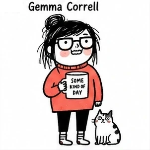
FA-001 · Playful Deadpan Doodle
Gemma Correll
松散黑线、怪萌人物、少量点色、白底、日常吐槽与尴尬幽默；人物轮廓优先于细节堆砌，脸型、头身比例与手脚形状要形成清楚而独立的视觉语言；表情偏冷脸、尴尬或突然夸张，姿态要有明确喜剧节奏，避免统一的可爱微笑。
风格：FA-001 主题：…

FA-002 · Conceptual Continuous-Line Editorial
Saul Steinberg
极简线描、连续线、概念隐喻、人与空间一体化、智性幽默。
风格：FA-002 主题：…
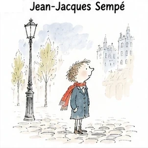
FA-003 · Fine-Line Urban Miniature
Jean-Jacques Sempé
极细钢笔线、小人物大空间、大量留白、温柔法式都市幽默。
风格：FA-003 主题：…
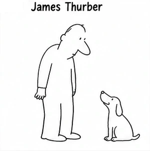
FA-004 · Awkward Minimal Ink Cartoon
James Thurber
故意笨拙的极简线条、比例失衡、几笔成形、冷幽默。
风格：FA-004 主题：…
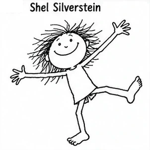
FA-005 · Childlike Free-Line Humor
Shel Silverstein
极简黑线、儿童式自由造型、荒诞动作、低细节。
风格：FA-005 主题：…
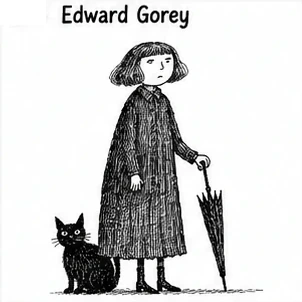
FA-006 · Victorian Crosshatch Gothic Cartoon
Edward Gorey
黑白钢笔、密集排线、维多利亚气息、古怪冷峻黑色幽默。
风格：FA-006 主题：…
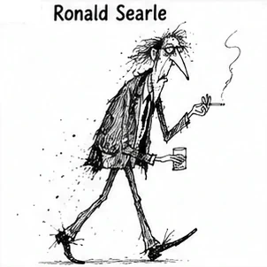
FA-007 · Frenetic Scratch-Ink Caricature
Ronald Searle
狂躁钢笔、断裂墨线、细长人体、尖锐夸张、动态极强。
风格：FA-007 主题：…
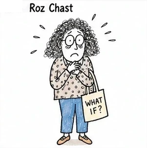
FA-008 · Nervous Urban Notebook Cartoon
Roz Chast
神经质手绘、歪斜线条、手写文字、都市焦虑式喜剧；人物轮廓优先于细节堆砌，脸型、头身比例与手脚形状要形成清楚而独立的视觉语言；表情与肢体动作要服从该风格的人格机制，避免回落为统一的标准Q版表情。
风格：FA-008 主题：…
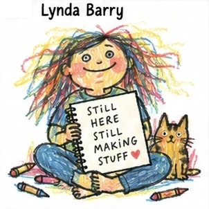
FA-009 · Raw Zine Diary Cartoon
Lynda Barry
粗糙手帐、Zine 感、手写字、原始情绪、反精致；人物轮廓优先于细节堆砌，脸型、头身比例与手脚形状要形成清楚而独立的视觉语言；保留纸纹、颗粒、套印或手工媒介的不完美，强化独立出版物的触感。
风格：FA-009 主题：…
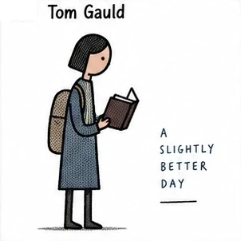
FA-010 · Geometric Literary Deadpan
Tom Gauld
极小几何人物、极简场景、文学/科技梗、冷面幽默；脸部与服装主动做减法，依靠清楚轮廓、眼口和少量关键形状建立人物辨识度；表情偏冷脸、尴尬或突然夸张，姿态要有明确喜剧节奏，避免统一的可爱微笑。
风格：FA-010 主题：…
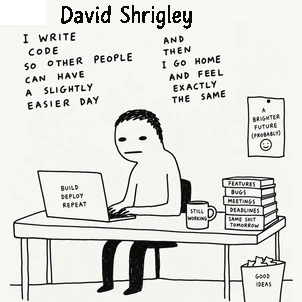
FA-011 · Deliberately Bad Absurd Doodle
David Shrigley
故意画坏、粗糙黑线、幼稚造型、荒诞文字、强 meme 感；人物轮廓优先于细节堆砌，脸型、头身比例与手脚形状要形成清楚而独立的视觉语言；表情偏冷脸、尴尬或突然夸张，姿态要有明确喜剧节奏，避免统一的可爱微笑。
风格：FA-011 主题：…
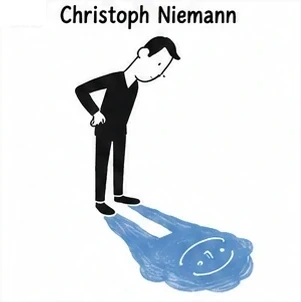
FA-012 · Minimal Visual-Pun Editorial
Christoph Niemann
极简概念设计、物体重解释、视觉双关、脑洞型构图；脸部与服装主动做减法，依靠清楚轮廓、眼口和少量关键形状建立人物辨识度；表情与肢体动作要服从该风格的人格机制，避免回落为统一的标准Q版表情。
风格：FA-012 主题：…

FA-013 · Bold Flat Everyday Satire
Jean Jullien
粗黑轮廓、扁平色块、现代人物、互联网生活讽刺；以醒目外轮廓和大形组织人物，五官少而有力，动作通过肩胯与手脚方向直接传达；表情偏冷脸、尴尬或突然夸张，姿态要有明确喜剧节奏，避免统一的可爱微笑。
风格：FA-013 主题：…

FA-014 · Handwritten British Anti-Inspiration Cartoon
Mr Bingo
随手钢笔、手写字、恶趣味、英式反鸡汤幽默；保留明显手绘笔压、停顿与轻微不齐整感，让轮廓产生真实纸上绘制的节奏；表情偏冷脸、尴尬或突然夸张，姿态要有明确喜剧节奏，避免统一的可爱微笑。
风格：FA-014 主题：…
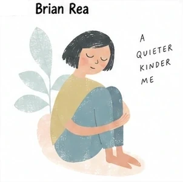
FA-015 · Soft Relationship Editorial Line Art
Brian Rea
极简人物线稿、人与关系、柔和色块、生活型社论；脸部与服装主动做减法，依靠清楚轮廓、眼口和少量关键形状建立人物辨识度；配色控制在柔和低刺激色域，用少量点色区分层次，背景保持轻和干净。
风格：FA-015 主题：…
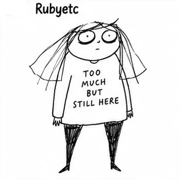
FA-016 · Raw Emotional Internet Doodle
Rubyetc
粗糙黑线、极简人体、心理情绪、自嘲式互联网漫画；脸部与服装主动做减法，依靠清楚轮廓、眼口和少量关键形状建立人物辨识度；保留纸纹、颗粒、套印或手工媒介的不完美，强化独立出版物的触感。
风格：FA-016 主题：…
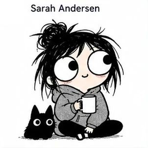
FA-017 · Black-and-White Reaction Diary Cartoon
Sarah Andersen
黑白简线、圆眼反应表情、松散黑发、日常衣着；人物常与小动物或生活物件并置，依靠简单轮廓和大面积留白塑造轻松的生活漫画感。
风格：FA-017 主题：…
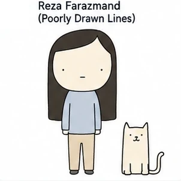
FA-018 · Minimal Deadpan Dialogue Cartoon
Poorly Drawn Lines / Reza Farazmand
极简圆头人物、面无表情、简单动物、灰蓝与米色小色块；人物和动物以干净轮廓置于白底中，靠冷淡姿态和微小关系制造荒诞幽默。
风格：FA-018 主题：…
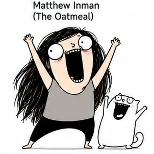
FA-019 · Explosive Webcomic Exaggeration
The Oatmeal / Matthew Inman
粗黑线、夸张圆眼、张大嘴、头发和四肢大幅甩动；人物常与动物同框，以强烈动作、巨大表情和少量灰黑色块形成爆发式网络漫画效果。
风格：FA-019 主题：…
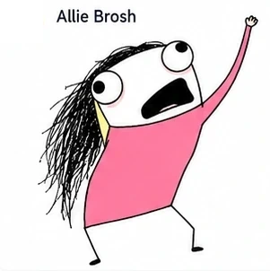
FA-020 · Low-Fi Frenzy Cartoon
Allie Brosh
粗糙鼠绘感、黑色乱发、极端大眼大嘴、粉色大色块、单人失控动作；保留低保真数字涂画的不规整轮廓和直接粗粝的互联网幽默。
风格：FA-020 主题：…
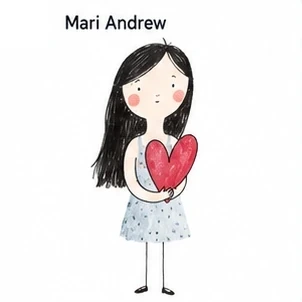
FA-021 · Watercolor Handwritten Life Notes
Mari Andrew
极简女性人物、细黑线、细长四肢、柔和水彩点染；以红色心形等单一物件承载生活情绪，画面保持白底、留白和轻微纸张质感。
风格：FA-021 主题：…
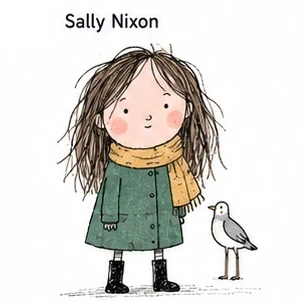
FA-022 · Flat Everyday Women Lifestyle
Sally Nixon
蓬松手绘线稿、质朴低饱和粉彩色块平涂、松弛生活速写感、克制留白与温暖呼吸感。
风格：FA-022 主题：…
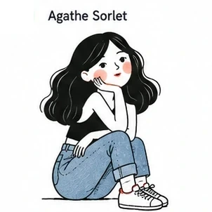
FA-023 · Warm Minimal Female Line Cartoon
Agathe Sorlet
极简黑色钢笔细线、克制几何平涂、少量高饱和暖色点睛、大面积纯净留白背景、亲密松弛的图形速写感。
风格：FA-023 主题：…
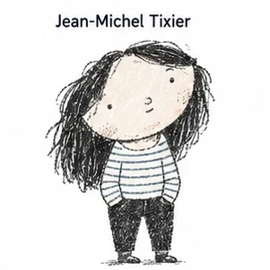
FA-024 · Geometric Fashion Deadpan
Jean-Michel Tixier
夸张大头、松散黑色短线、冷面人物、横条纹上衣、灰黑与浅色块；人物比例故意不协调，依靠简化脸部和粗略纹理形成时尚而疏离的幽默感。
风格：FA-024 主题：…
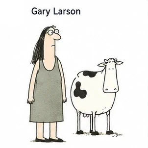
FA-025 · One-Panel Absurd Social Cartoon
Gary Larson
单格漫画、极简黑线、细长人物与动物并置、荒诞社会情境；人物和动物以克制的姿态和少量灰绿色块呈现一本正经的反逻辑幽默。
风格：FA-025 主题：…
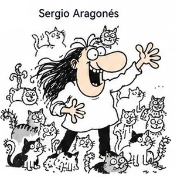
FA-026 · Dense Silent Physical Comedy
Sergio Aragonés
密集小动物和小人物、粗黑线、夸张鼻子与张嘴大笑、四肢向外伸展；画面充满无字肢体喜剧和拥挤的动作信息。
风格：FA-026 主题：…
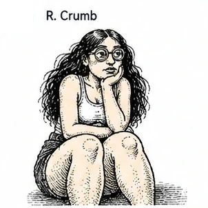
FA-027 · Underground Crosshatched Grotesque Cartoon
R. Crumb
黑色密排线、粗重轮廓、坐姿人物、夸张而不修饰的人体比例；皮肤、头发和衣物依靠密集交叉排线塑造，带有地下漫画的粗粝与怪诞。
风格：FA-027 主题：…
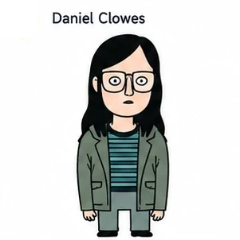
FA-028 · Retro Detached American Comic
Daniel Clowes
黑色齐肩直发、方形眼镜、条纹上衣与绿色外套、冷静平涂色块；人物正面站立、表情疏离，画面具有复古美式成人漫画的克制感。
风格：FA-028 主题：…
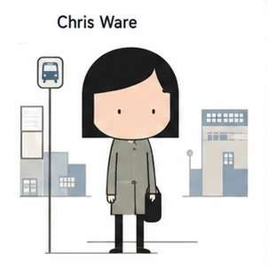
FA-029 · Geometric Diagrammatic Narrative
Chris Ware
几何精密线条、孤立小人物、公交站牌与城市方块、信息图式留白；人物和环境由规整矩形与细线组成，色彩克制，叙事像一张安静的城市图表。
风格：FA-029 主题：…
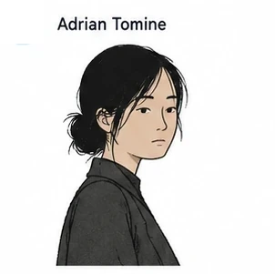
FA-030 · Clean Urban Solitude Comic
Adrian Tomine
清晰细线、年轻亚洲女性半身像、深色外套、低饱和肤色与黑发；人物侧身回望，表情安静克制，背景留白，呈现都市观察和轻微疏离。
风格：FA-030 主题：…
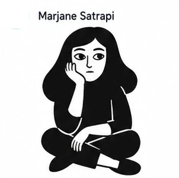
FA-031 · High-Contrast Black-White Memoir Cartoon
Marjane Satrapi
黑白高对比、粗黑剪影、盘坐女性、简化五官、大片纯黑服装；人物姿态直接而静止，依靠白色脸部和黑色轮廓形成克制的回忆录漫画感。
风格：FA-031 主题：…
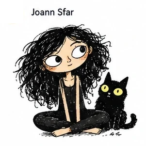
FA-032 · Loose French Improvised Ink
Joann Sfar
松散即兴法式墨线、轻微抖动与手绘停顿笔触、少量暖色水彩晕染点缀、俏皮略带怪诞的插画张力。
风格：FA-032 主题：…
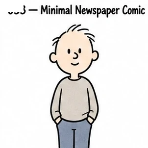
FA-033 · Minimal Newspaper Comic
Charles M. Schulz
极简报纸漫画线、圆头小人物、低动作高人格、细微表情。
风格：FA-033 主题：…
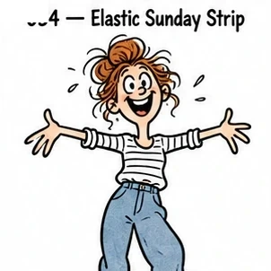
FA-034 · Elastic Sunday Strip
Bill Watterson
松散弹性墨线、夸张儿童表情、强肢体动作、少量透明水彩；保留明显手绘笔压、停顿与轻微不齐整感，让轮廓产生真实纸上绘制的节奏；上色保留透明叠染、柔软边缘和纸纹，允许轻微颜色不均与留白。
风格：FA-034 主题：…
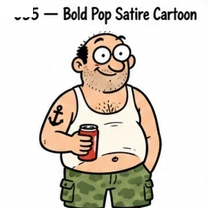
FA-035 · Bold Pop Satire Cartoon
Matt Groening
粗黑轮廓、圆凸大眼、扁平人物、极少阴影、成人讽刺；以醒目外轮廓和大形组织人物，五官少而有力，动作通过肩胯与手脚方向直接传达；配色使用少量高纯度撞色和平涂，让人物剪影和服装保持强图形对比。
风格：FA-035 主题：…
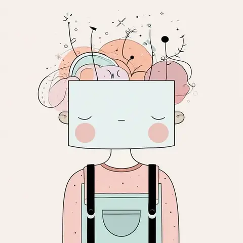
FA-036 · Minimalist Organic Pastel Editorial
OscarAI
现代极简编辑插画风、轻细灵动的铅笔/墨线、抽象有机几何形状、柔和莫兰迪粉彩色调、微颗粒纸本噪点与呼吸感留白。
风格：FA-036 主题：…
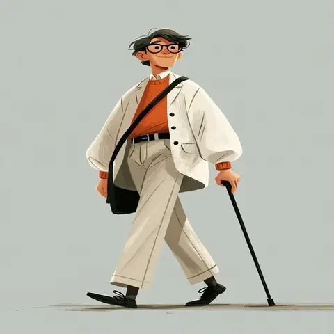
FA-037 · Chic Urban Editorial Motion Character
Ahmed
现代都市时尚编辑插画风、优雅舒展的动态剪影、松弛大方的服饰垂坠感、哑光粉彩与柔和铅笔微颗粒纹理、暖色提亮撞色、兼具高级时尚感与动画角色设计的清爽气质。
风格：FA-037 主题：…
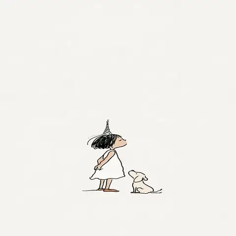
FA-038 · Minimalist Poetic Sempé Ink Doodle
James Yeung
极简法式诗意水墨线描风、桑贝式松弛写意小人与萌宠、大面积纯净留白、质朴手绘墨水笔触、治愈松弛的都市童心与生活小哲思。
风格：FA-038 主题：…
FA-039 · Hand-Drawn Stick Figure Cartoon
手绘火柴人漫画
手绘火柴人漫画。人物必须采用真正的 stick figure anatomy：正常偏小的圆形头部，头部约占人物总高度 1/4～1/3；脖子、躯干、双臂、双腿主要由单根细黑线构成。肩、肘、膝只通过线条折角表达，手和脚极度简化。五官仅用两个小黑点眼睛、短线眉毛和极简单嘴型，发型用简单平涂。人物姿态依靠火柴线骨架的倾斜、弯曲、重心和四肢方向表达。黑色细手绘线条，轻微不规则，但整体清晰克制。上身/衣服用极简单的几何色块。背景根据主题使用低细节卡通，部分留白。
风格：FA-039 主题：…
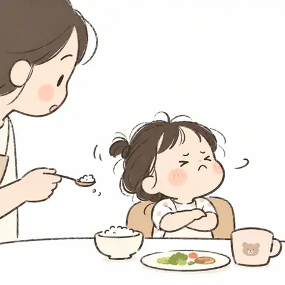
FA-040 · Minimalist 2D Hand-Drawn Doodle
极简手绘
极简2D手绘简笔画表现，强调概括造型、轻柔线条、低细节、天真趣味
风格：FA-040 主题：…
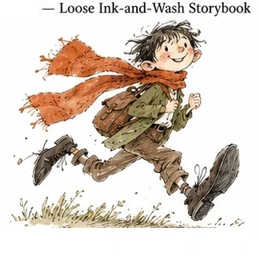
FB-001 · Loose Ink-and-Wash Storybook
Quentin Blake
抖动墨线、松散水彩、四肢夸张、动作极灵、快速速写感。
风格：FB-001 主题：…
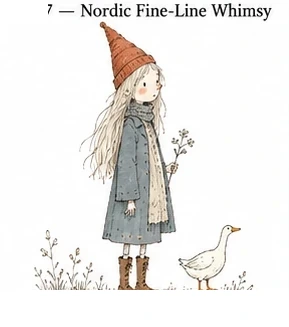
FB-002 · Nordic Fine-Line Whimsy
Tove Jansson
北欧墨线、细密但轻盈、奇异人物、温柔孤独、大留白。
风格：FB-002 主题：…
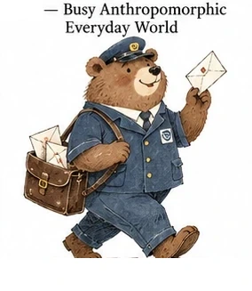
FB-003 · Busy Anthropomorphic Everyday World
Richard Scarry
拟人动物社会、职业角色、圆润轮廓、丰富生活动作。
风格：FB-003 主题：…
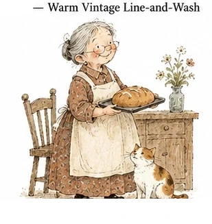
FB-004 · Warm Vintage Line-and-Wash
Arnold Lobel
古典细线、水彩旧书感、安静角色、温暖生活气息。
风格：FB-004 主题：…
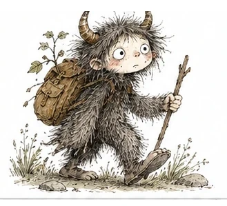
FB-005 · Crosshatched Wild Storybook
Maurice Sendak
细线排线、怪物造型、童话荒诞、毛茸茸纹理。
风格：FB-005 主题：…
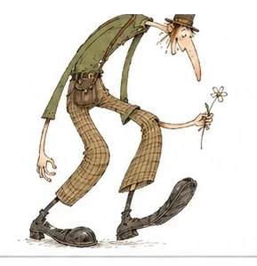
FB-006 · Bendy Absurd Storybook
Dr. Seuss
极端比例、弯曲结构、怪生物、流动线条、疯狂想象。
风格：FB-006 主题：…
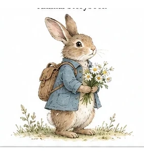
FB-007 · Naturalist Watercolor Animal Storybook
Beatrix Potter
精细水彩、自然主义动物、古典绘本、柔和纸张感。
风格：FB-007 主题：…
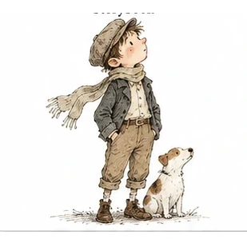
FB-008 · Classic Pen-and-Light-Wash Storybook
E. H. Shepard
钢笔速写、淡水彩、古典角色、优雅而轻松。
风格：FB-008 主题：…
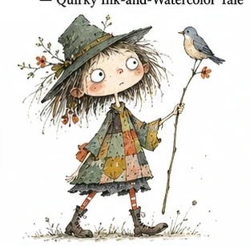
FB-009 · Quirky Ink-and-Watercolor Tale
Satoshi Kitamura
怪趣人物、墨线、水彩、不规则比例、现代童话；保留明显手绘笔压、停顿与轻微不齐整感，让轮廓产生真实纸上绘制的节奏；上色保留透明叠染、柔软边缘和纸纹，允许轻微颜色不均与留白。
风格：FB-009 主题：…
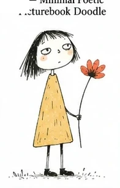
FB-010 · Minimal Poetic Picturebook Doodle
Oliver Jeffers
极简人物、手写感、松散涂色、诗意荒诞；脸部与服装主动做减法，依靠清楚轮廓、眼口和少量关键形状建立人物辨识度；表情偏冷脸、尴尬或突然夸张，姿态要有明确喜剧节奏，避免统一的可爱微笑。
风格：FB-010 主题：…
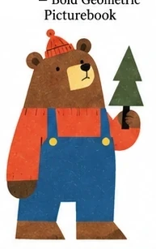
FB-011 · Bold Geometric Picturebook
Chris Haughton
几何块面、极简轮廓、高饱和色、强剪影；脸部与服装主动做减法，依靠清楚轮廓、眼口和少量关键形状建立人物辨识度；配色使用少量高纯度撞色和平涂，让人物剪影和服装保持强图形对比。
风格：FB-011 主题：…
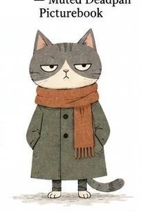
FB-012 · Muted Deadpan Picturebook
Jon Klassen
极简动物、半闭眼、低饱和、Deadpan 冷幽默；脸部与服装主动做减法，依靠清楚轮廓、眼口和少量关键形状建立人物辨识度；配色控制在柔和低刺激色域，用少量点色区分层次，背景保持轻和干净。
风格：FB-012 主题：…
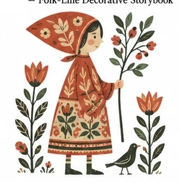
FB-013 · Folk-Line Decorative Storybook
Carson Ellis
民俗线描、复古配色、植物纹样、奇异群像；人物轮廓优先于细节堆砌，脸型、头身比例与手脚形状要形成清楚而独立的视觉语言；表情与肢体动作要服从该风格的人格机制，避免回落为统一的标准Q版表情。
风格：FB-013 主题：…
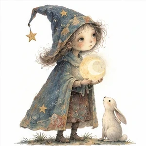
FB-014 · Dreamlike Surreal Storybook
Shaun Tan
柔和手绘笔触、轻微超现实人物、低饱和梦境配色、安静叙事气质；人物轮廓简洁清楚，比例略诗意变形，表情克制偏沉静，留出白底与空间感，避免过于指向单一作者的独特怪脸机制。
风格：FB-014 主题：…
FB-015 · Layered Vintage Storybook Collage
Lane Smith
分层拼贴质感、复古纸张肌理、手工剪贴与印刷颗粒感并存；人物由大形与贴纸般色块构成，造型怪趣但易读，配色温暖克制，强调材料感与旧书气息，避免复现某个固定童书角色。
风格：FB-015 主题：…
FB-016 · Expressive Character Sketch Cartoon
Peter de Sève
速写式手绘线条、夸张但亲切的人物表演、清楚外轮廓与鲜明性格；脸部结构简化，眉眼嘴主导情绪，动作有动画草图般弹性和节奏，适合做高人格角色，避免过度逼近具体作者角色设计。
风格：FB-016 主题：…
FB-017 · Dreamlike Clean-Line Sci-Fi Figure
Jean Giraud / Moebius
干净细线、轻科技感人物、简洁未来服装与梦境般留白；线条清晰克制，配色偏浅淡蓝灰或柔和中性色，人物修长、姿态安静，强调现代科幻插图气质而非某个具体世界观。
风格：FB-017 主题：…
FB-018 · European Clear-Line Adventure Figure
Hergé
欧洲清线漫画语言、整洁闭合轮廓、平涂配色、人物可读性极高；造型简洁、动作明确，脸部结构控制在少量特征之内，带轻冒险叙事感，避免直接滑向某个经典固定角色。
风格：FB-018 主题：…

FB-019 · Geometric European Clear-Line Figure
Joost Swarte
几何化清线人物、现代主义图形秩序、简洁建筑感服装与姿态；以圆方弧线组织角色，平涂色块干净，表情直接而克制，整体更偏欧洲平面设计人物感，避免过强的单一作者指纹。
风格：FB-019 主题：…
FB-020 · Quirky 60s-70s Retro Storybook Illustration
OscarAI
60-70年代复古儿童绘本插画感、夸张大眼睛与生动面部特征、粗糙手绘线条、质朴色铅笔/蜡笔颗粒质感、暖调复古配色、简练几何轮廓与怪诞可爱的人物造型。
风格：FB-020 主题：…
FB-021 · Charming Vintage Storybook Illustration
OscarAI
复古暖调手绘儿童绘本插画风、质感蜡笔与彩铅颗粒肌理、松弛粗糙的墨水轮廓线、夸张生动的大眼睛与古怪可爱角色造型、复古纸本留边边框、明亮温暖的欧式复古动画叙事感。
风格：FB-021 主题：…
FB-022 · Mid-Century Poetic Ink & Watercolor Storybook
OscarAI
二十世纪中叶经典复古儿童绘本风、细腻松弛的钢笔墨水线条、清透柔和的水彩晕染、大面积纯净留白、质朴水彩纸纹理、丁丁历险记般的诗意复古童趣。
风格：FB-022 主题：…
FB-023 · Whimsical Watercolor Die-Cut Sticker Cartoon
OscarAI
手绘水彩贴纸风、圆形模切与干净白边边框、明亮灵动的大眼睛与微卷发丝、温润水彩与不透明水粉质感、治愈可爱的现代儿童插画与潮玩贴纸美学。
风格：FB-023 主题：…
FB-024 · Painterly Gouache Animation Storybook
OscarAI
温暖厚涂水粉动画插画风、松弛可见的干湿画笔笔触、夸张清澈的纯真大眼、温润电影感柔光与雪景氛围、复古绘本与现代动画长片概念美术质感。
风格：FB-024 主题：…
FB-025 · Vintage Ink & Watercolor Comic Storybook
OscarAI
经典复古手绘漫画绘本风、生动流畅的蘸水笔墨水线条、温润质朴的水彩平涂晕染、复古报刊插画排线、大眼睛与红润脸蛋的可爱人物造型、温暖怀旧的童年冒险叙事感。
风格：FB-025 主题：…
FB-026 · Warm Gouache & Colored Pencil Storybook Character
OscarAI
温暖水粉与彩色铅笔手绘绘本风、细腻柔和的铅笔颗粒质感与排线肌理、圆润饱满的卡通面部轮廓、大黑框眼镜与可爱红鼻头、治愈温馨的现代儿童插画质感。
风格：FB-026 主题：…
FB-027 · Edwardian Vintage Ink Fashion Editorial
OscarAI
复古墨水插画风、精美利落的钢笔交叉排线与羽化阴影、修长典雅的图形化剪影、复古蓝与芥末黄点缀平涂、大面积呼吸感留白与诗意文学氛围。
风格：FB-027 主题：…
FB-028 · Loose Ink & Gouache Storybook Studio
OscarAI
松散墨水线条与水粉手绘插画风、率性写意的笔触排线、大头蓬松卷发与胡须大叔与宠物鸭子、温馨充满故事感的欧式生活日常画室。
风格：FB-028 主题：…
FB-029 · Charming Children Crayon Storybook
儿童蜡笔手绘绘本
儿童蜡笔手绘绘本风、粗蜡笔涂抹质感与明显手绘肌理、低幼绘本插画、童真可爱、造型简化与平视视角、画面干净简约、温暖柔和马卡龙配色、明亮轻快、线条自然稚拙、整体温暖治愈。
风格：FB-029 主题：…
FB-030 · Soft Crayon & Sumi-e Cat Storybook
なっくす
温润蜡笔与水墨和风绘本风、质朴手绘炭笔与蜡笔颗粒肌理、细腻毛流与柔和边缘晕染、微型对比构图与红色印章点缀、充满童趣温暖的日式日常绘本。
风格：FB-030 主题：…
FB-031 · Jimmy Liao Whimsical & Poetic Storybook Watercolor
几米
几米绘本插画风、大面积纯净留白与空灵通透构图、童真童趣与细腻温情、淡雅水彩晕染与柔和手绘线条、治愈诗意的绘本故事感。
风格：FB-031 主题：…
FB-032 · Minimalist Atmospheric Storybook & Vast Scale Contrast
yang02010
现代极简绘本插画风、大面积同色系连续环境主导画面、背景极度简化并仅保留少量必要景物、人物微缩与宏大环境强烈尺度反差、安静松弛与诗意孤独氛围、非对称大面积负空间留白、主体轮廓简练概括、手绘笔触与纸张颗粒/蜡笔丙烯干刷纹理。
风格：FB-032 主题：…
FB-033 · Forest Children Storybook Illustration
森系儿童插画
新自然系治愈绘本风、高度二维平面化几何造型、清透嫩绿与大地色系点缀、圆润几何色块概括、柔和漫射环境光、弱透视与装饰性插画质感、安静温暖生命力。
风格：FB-033 主题：…
FB-034 · Minimalist Doodle & Semi-Realistic Hybrid Illustration
简笔与半写实融合风
写实与简笔融合的混合插画风。画面中同时存在两种清晰区分的视觉语言：一部分内容采用细腻写实或半写实表现，强调自然质感、真实纹理、柔和层次、细节刻画与轻盈光感；另一部分内容采用极简2D手绘简笔画表现，强调概括造型、轻柔线条、低细节、适度留白与天真趣味。两种画法并置共存，形成明确可辨的风格反差，同时保持统一、和谐、克制的审美协调。 主体角色或主要视觉对象优先采用2D插画化表现，保持平面感、手绘感与概括感，不要做成照片感、3D感或厚重写实感；其余环境、植物、材质、局部场景元素可适度引入细腻半写实表现，另有部分装饰性元素可继续使用极简手绘简笔语言。整体应保留“主体偏2D、局部写实、局部简笔”的清晰层次关系。 整体气质轻盈、温柔、治愈、清新、诗意，带有文艺感与绘本感。色彩以低饱和、高明度、柔和通透的浅色系为主，避免浓烈对比、厚重综合色块和高饱和炫目视觉。背景倾向干净、简洁、留白充足，不过度堆叠信息，画面重视呼吸感、秩序感与视觉节奏。 写实部分不要过度摄影化，不要强烈商业修图感，不要走照片级写实路线；简笔部分不要复杂化，不追求真实结构与繁复刻画，应保留手绘的松弛感、稚拙感与亲和力。线条细而柔和，造型圆润、概括、克制，整体呈现“精致与天真并存”“真实与童趣并存”的视觉效果。 风格重点不是把所有内容统一成单一画法，而是保留“精细写实”与“简洁手绘”之间清晰可辨的差异，并让这种差异成为画面的核心风格特征。整体不做厚涂，不做3D，不做强戏剧光影，不做复杂纹样堆砌，不做过强体积塑造，不做商业海报式锐利修饰。
风格：FB-034 主题：…
FB-035 · Charlie Mackesy Expressive Ink & Watercolor Storybook
Charlie Mackesy
参考绘本作者Charlie Mackesy
风格：FB-035 主题：…
FB-036 · Liz Climo Minimal Animal Cartoon Storybook
Liz Climo
参考绘本作者Liz Climo
风格：FB-036 主题：…
FB-037 · Naoko Takagi Warm Daily Life Storybook
Naoko Takagi
参考绘本作者Naoko Takagi
风格：FB-037 主题：…
FB-038 · Yoko Sano Whimsical Crayon & Watercolor Storybook
Yoko Sano
参考绘本作者Yoko Sano
风格：FB-038 主题：…
FB-039 · Emily Hughes Wild Lush Botanical Storybook
Emily Hughes
参考绘本作者Emily Hughes
风格：FB-039 主题：…
FB-040 · Felicita Sala Cozy Kitchen & Nature Storybook
Felicita Sala
参考绘本作者Felicita Sala
风格：FB-040 主题：…
FB-041 · Michael Grejniec Textured Paper Watercolor Storybook
Michael Grejniec
参考绘本作者Michael Grejniec
风格：FB-041 主题：…
FB-042 · Jackie Morris Luminous Wildlife Watercolor Storybook
Jackie Morris
参考绘本作者Jackie Morris
风格：FB-042 主题：…
FB-043 · Manuel Marsol Bold Acrylic Cinematic Storybook
Manuel Marsol
参考绘本作者Manuel Marsol
风格：FB-043 主题：…
FB-044 · Suzy Lee Expressive Border Charcoal & Watercolor Storybook
Suzy Lee
参考绘本作者Suzy Lee
风格：FB-044 主题：…
FB-045 · Komako Sakai Textured Acrylic & Charcoal Storybook
Komako Sakai
参考绘本作者Komako Sakai
风格：FB-045 主题：…
FB-046 · Sydney Smith Luminous Atmospheric Watercolor Storybook
Sydney Smith
参考绘本作者Sydney Smith
风格：FB-046 主题：…
FB-047 · Isabelle Arsenault Poetic Pencil & Gouache Storybook
Isabelle Arsenault
参考绘本作者Isabelle Arsenault
风格：FB-047 主题：…
FB-048 · Júlia Sardà Ornate Gothic Whimsical Storybook
Júlia Sardà
参考绘本作者Júlia Sardà
风格：FB-048 主题：…
FB-049 · Sophie Blackall Vintage Chinese Ink & Watercolor Storybook
Sophie Blackall
参考绘本作者Sophie Blackall
风格：FB-049 主题：…
FB-050 · Katsumi Komagata Minimal Geometric Cut-Paper Storybook
Katsumi Komagata
参考绘本作者Katsumi Komagata
风格：FB-050 主题：…
FB-051 · Kazuo Iwamura Warm Forest Animals Watercolor Storybook
Kazuo Iwamura
参考绘本作者Kazuo Iwamura
风格：FB-051 主题：…
FB-052 · Keiko Sena Whimsical Collage Paper-Cut Storybook
Keiko Sena
参考绘本作者Keiko Sena
风格：FB-052 主题：…
FB-053 · Rotraut Susanne Berner Bustling Wimmelbuch Line & Wash Storybook
Rotraut Susanne Berner
参考绘本作者Rotraut Susanne Berner
风格：FB-053 主题：…
FB-054 · Wolf Erlbruch Philosophical Collage & Chalk Storybook
Wolf Erlbruch
参考绘本作者Wolf Erlbruch
风格：FB-054 主题：…
FB-055 · Peter Sis Intricate Stippled Map & Fantasy Storybook
Peter Sís
参考绘本作者Peter Sis
风格：FB-055 主题：…
FB-056 · Carll Cneut Ornate Flemish Baroque Gouache Storybook
Carll Cneut
参考绘本作者Carll Cneut
风格：FB-056 主题：…
FB-057 · Benjamin Lacombe Gothic Romantic Gouache Storybook
Benjamin Lacombe
参考绘本作者Benjamin Lacombe
风格：FB-057 主题：…
FB-058 · Rebecca Green Cozy Gouache & Colored Pencil Storybook
Rébecca Green
参考绘本作者Rebecca Green
风格：FB-058 主题：…
FB-059 · Marianne Dubuc Gentle Forest Animal Watercolor Storybook
Marianne Dubuc
参考绘本作者Marianne Dubuc
风格：FB-059 主题：…
FB-060 · Marla Frazee Playful Childlike Pencil & Watercolor Storybook
Marla Frazee
参考绘本作者Marla Frazee
风格：FB-060 主题：…
FB-061 · Catarina Sobral Bold Geometric Midcentury Graphic Storybook
Catarina Sobral
参考绘本作者Catarina Sobral
风格：FB-061 主题：…
FB-062 · Violeta Lopiz Poetic Minimal Ink & Botanical Storybook
Violeta Lópiz
参考绘本作者Violeta Lopiz
风格：FB-062 主题：…
FB-063 · Mariachiara Di Giorgio Luminous Atmospheric Water & Nature Storybook
Mariachiara Di Giorgio
参考绘本作者Mariachiara Di Giorgio
风格：FB-063 主题：…
FB-064 · JiHyun Kim Deep Ocean Sunlit Watercolor Storybook
JiHyun Kim
参考绘本作者JiHyun Kim
风格：FB-064 主题：…
FB-065 · Cai Gao Traditional Chinese Folk Warm Storybook
蔡皋
参考绘本作者蔡皋
风格：FB-065 主题：…
FB-066 · Aiko Fukawa Cozy Domestic Life & Floral Gouache Storybook
Aiko Fukawa / 布川爱子
参考绘本作者Aiko Fukawa
风格：FB-066 主题：…
FC-001 · Chaotic Color Doodle Crowd
Jon Burgerman
风格：FC-001 主题：…
FC-002 · Pop Magazine Doodle Overlay
Hattie Stewart
卡通嘴眼、杂志涂鸦覆盖、Pop 色彩、朋克恶搞；人物轮廓优先于细节堆砌，脸型、头身比例与手脚形状要形成清楚而独立的视觉语言；配色使用少量高纯度撞色和平涂，让人物剪影和服装保持强图形对比。
风格：FC-002 主题：…
FC-003 · Retro Geometric City Cartoon
Andy Rementer
几何人物、复古城市、高饱和平涂、70s–80s 商业卡通感；人物以圆、方、弧线等大形构成，五官图标化，比例强调图形辨识而非写实解剖；配色使用少量高纯度撞色和平涂，让人物剪影和服装保持强图形对比。
风格：FC-003 主题：…
FC-004 · Minimal Bold-Color Fashion Geometry
Olimpia Zagnoli
极简几何、大块高饱和色、女性时尚人物；脸部与服装主动做减法，依靠清楚轮廓、眼口和少量关键形状建立人物辨识度；配色使用少量高纯度撞色和平涂，让人物剪影和服装保持强图形对比。
风格：FC-004 主题：…
FC-005 · High-Contrast Negative-Space Figure
Malika Favre
极简剪影、正负形、高对比色、强视觉切割；脸部与服装主动做减法，依靠清楚轮廓、眼口和少量关键形状建立人物辨识度；主要依靠黑白关系和大面积留白塑形，表情集中在眼神、眉形与嘴形变化。
风格：FC-005 主题：…
FC-006 · Negative-Space Visual-Pun Graphic
Noma Bar
负空间、双重图像、极少颜色、视觉双关；人物轮廓优先于细节堆砌，脸型、头身比例与手脚形状要形成清楚而独立的视觉语言；表情与肢体动作要服从该风格的人格机制，避免回落为统一的标准Q版表情。
风格：FC-006 主题：…
FC-007 · Midcentury Geometric Fairytale
Mary Blair
几何童话、现代主义色块、夸张比例、明快配色。
风格：FC-007 主题：…
FC-008 · Ultra-Geometric Nature Character
Charley Harper
极端几何化动物与人物、Flat Shape、装饰性强。
风格：FC-008 主题：…
FC-009 · Rough Cut-Paper Modernist Graphic
Saul Bass
剪纸般粗粝几何形、强符号、极少元素。
风格：FC-009 主题：…
FC-010 · Playful Modernist Collage Character
Paul Rand
拼贴、玩具式图形、几何人物、现代主义幽默。
风格：FC-010 主题：…
FC-011 · Retro Pop Editorial Figure
Milton Glaser
复古社论、强轮廓、波普色彩、海报化人物。
风格：FC-011 主题：…
FC-012 · Bold Retro Advertising Cartoon
Seymour Chwast
粗线、复古广告、怪趣人物、Push Pin 气质。
风格：FC-012 主题：…
FC-013 · Decorative Retro Commercial Illustration
Push Pin Studios
复古商业插画、装饰线条、怪人物、印刷感。
风格：FC-013 主题：…
FC-014 · Freeform Cut-Paper Figure
Henri Matisse cut-outs
剪纸色块、自由人体、极简轮廓、大面积纯色。
风格：FC-014 主题：…
FC-015 · Poetic Single-Line Figure
Jean Cocteau line drawing
单线脸、不断笔、极少细节、优雅诗性。
风格：FC-015 主题：…
FC-016 · Abstract Continuous-Line Figure
Pablo Picasso line drawings
连续线、抽象人体、几何变形、符号化。
风格：FC-016 主题：…
FC-017 · Bold Kinetic Street-Pictogram
Keith Haring
粗黑连续轮廓、动态小人、高动作、街头图腾。
风格：FC-017 主题：…
FC-018 · Raw Symbolic Graffiti Figure
Jean-Michel Basquiat
原始涂鸦、皇冠与符号、文字碎片、爆裂能量。
风格：FC-018 主题：…
FC-019 · Punk Ink-and-Text Editorial
Raymond Pettibon
黑墨速写、朋克线稿、文字并置、粗粝社论；保留明显手绘笔压、停顿与轻微不齐整感，让轮廓产生真实纸上绘制的节奏；表情与肢体动作要服从该风格的人格机制，避免回落为统一的标准Q版表情。
风格：FC-019 主题：…
FC-020 · Grotesque Classical-Comic Portrait
George Condo drawing
扭曲五官、怪表情、古典人物与漫画混合；人物轮廓优先于细节堆砌，脸型、头身比例与手脚形状要形成清楚而独立的视觉语言；表情与肢体动作要服从该风格的人格机制，避免回落为统一的标准Q版表情。
风格：FC-020 主题：…
FC-021 · Flat Belle-Époque Poster Figure
Henri de Toulouse-Lautrec
海报式人物、简化轮廓、平面色块、都市生活。
风格：FC-021 主题：…
FC-022 · Angular Expressive Figure Line
Egon Schiele drawing
断裂敏感线条、细瘦人体、扭曲姿态、强情绪。
风格：FC-022 主题：…
FC-023 · Raw Art-Brut Figure
Jean Dubuffet
Art Brut、粗糙线、人形符号、儿童式反精致。
风格：FC-023 主题：…
FC-024 · Poetic Geometric Symbol Figure
Paul Klee
细线几何、童真符号、诗意色块、抽象人物。
风格：FC-024 主题：…
FC-025 · Biomorphic Symbolic Character
Joan Miró
生物符号、原始线条、红蓝黄点色、自由空间。
风格：FC-025 主题：…
FC-026 · Fluid Single-Line Motion Figure
Alexander Calder drawings
单线人物、流畅连续线、极简动态。
风格：FC-026 主题：…
FC-027 · Cinematic Grainy Flat-Shape Illustration
Tom Haugomat
电影感极简色块、颗粒、强光影、远近层次；脸部与服装主动做减法，依靠清楚轮廓、眼口和少量关键形状建立人物辨识度；保留纸纹、颗粒、套印或手工媒介的不完美，强化独立出版物的触感。
风格：FC-027 主题：…
FC-028 · Retro Silkscreen Geometric Figure
Blexbolex
复古丝网印刷、厚重几何色层、旧书颗粒；人物以圆、方、弧线等大形构成，五官图标化，比例强调图形辨识而非写实解剖；保留纸纹、颗粒、套印或手工媒介的不完美，强化独立出版物的触感。
风格：FC-028 主题：…
FC-029 · Clean Airy Flat Vector Illustration
清透扁平插画
轮廓清晰的大面积平涂色块塑造形体；造型适度概括与圆润几何化，保留关键识别特征；每个区域最多两级平面明暗与清晰硬边阴影，通过色块明度、冷暖和面积对比表现空间层次；色彩明亮清爽、柔和通透，纯净平滑的画面质感；极简主义、简洁现代，具有轻盈的现代商业插画与编辑插画感
风格：FC-029 主题：…
FC-030 · Flat Geometric Airbrush Grain Illustration
扁平几何气刷颗粒插画
扁平几何插图、夸张的不对称比例、柔和的气刷阴影、精细的印刷颗粒感。角色由几个超大尺寸、不对称的形状构建而成。大型物体是姿势的一部分，并改变轮廓。黑色剪纸面部特征。情感从全身姿态中传达出来。扁平颜色块带有清晰边缘；形状重叠处采用柔和的深色到颜色的喷雾渐变。精细的点刻颗粒主要位于墨水区域内部，在纸张上几乎不可见。
风格：FC-030 主题：…
FC-031 · Modern Retro Rubber-Hose Cartoon Illustration
美式现代复古橡皮管卡通插画
灵感来自美式现代复古 Rubber-Hose 插画风格。但整体更加现代、明亮、干净、可爱。角色采用圆润、简洁、夸张的卡通造型，四肢像柔软的橡皮管一样自然弯曲和延伸，弱化真实关节与人体结构，让动作更自由、更有节奏感。整体以粗而流畅的黑色轮廓线搭配干净的平涂色块，减少复杂光影和厚重做旧效果。造型简洁时尚，比例可爱，表情有个性。整体清爽、协调、有设计感。画面具有轻松幽默、俏皮可爱和一点点怪趣感，动作夸张流畅，像带有爵士节奏的动态瞬间。整体视觉偏现代潮流插画、复古海报和独立品牌插画质感，干净、可爱、有辨识度，减少老旧胶片颗粒与过度怀旧感。
风格：FC-031 主题：…
FC-032 · Alphonse Mucha Art Nouveau Illustration
阿尔丰斯·穆夏 / Alphonse Mucha
风格：FC-032 主题：…
FD-001 · Dynamic East-Asian Ink Editorial
Yuko Shimizu
流动墨线、东方笔意、强动作、现代 Editorial；保留明显手绘笔压、停顿与轻微不齐整感，让轮廓产生真实纸上绘制的节奏；线条带书写性与留白意识，衣褶、发丝和姿势顺势流动，东方感来自形与节奏。
风格：FD-001 主题：…
FD-002 · Quiet Low-Saturation Japanese Editorial
Tatsuro Kiuchi
安静平面人物、低饱和、留白、日系现代社论；人物轮廓优先于细节堆砌，脸型、头身比例与手脚形状要形成清楚而独立的视觉语言；配色控制在柔和低刺激色域，用少量点色区分层次，背景保持轻和干净。
风格：FD-002 主题：…
FD-003 · Minimal Fashion Line Figure
Yu Nagaba
极简黑线、时尚人物、无阴影、大白底；脸部与服装主动做减法，依靠清楚轮廓、眼口和少量关键形状建立人物辨识度；人物姿态松弛自然，服装靠清楚剪影体现时尚感，避免模板化甜美脸。
风格：FD-003 主题：…
FD-004 · Cool Minimal Black-and-White Figure
Noritake
黑白线稿、极简脸、无表情、清冷日常；脸部与服装主动做减法，依靠清楚轮廓、眼口和少量关键形状建立人物辨识度；主要依靠黑白关系和大面积留白塑形，表情集中在眼神、眉形与嘴形变化。
风格：FD-004 主题：…
FD-005 · Showa Retro Commercial Cartoon
Ryohei Yanagihara
昭和商业插画、圆润人物、明快复古色。
风格：FD-005 主题：…
FD-006 · Airy Transparent Watercolor Figure
Chihiro Iwasaki
极轻透明水彩、柔和人物、湿边晕染、大量白纸。
风格：FD-006 主题：…
FD-007 · Showa Everyday Family Comic
Machiko Hasegawa
昭和家庭漫画、简洁线条、日常观察。
风格：FD-007 主题：…
FD-008 · Folklore Monster Ink Cartoon
Shigeru Mizuki
朴拙漫画线、民俗怪谈、妖怪造型、黑白纹理。
风格：FD-008 主题：…
FD-009 · Classic Rounded Manga Character
Osamu Tezuka
圆润漫画轮廓、清楚表演、大眼、强动作可读性。
风格：FD-009 主题：…
FD-010 · Rebellious Big-Head Deadpan Figure
Yoshitomo Nara
大头冷脸、叛逆眼神、极少背景、怪可爱；人物轮廓优先于细节堆砌，脸型、头身比例与手脚形状要形成清楚而独立的视觉语言；表情偏冷脸、尴尬或突然夸张，姿态要有明确喜剧节奏，避免统一的可爱微笑。
风格：FD-010 主题：…
FD-011 · 80s Clean-Line Urban Pop Girl
Hisashi Eguchi
清线都市少女、80s 时尚、大块留白、Pop 色；人物轮廓优先于细节堆砌，脸型、头身比例与手脚形状要形成清楚而独立的视觉语言；配色使用少量高纯度撞色和平涂，让人物剪影和服装保持强图形对比。
风格：FD-011 主题：…
FD-012 · Ornate Strange Botanical Ink
Yuko Higuchi
精密钢笔、奇异动植物、古典怪萌、细节密集；保留明显手绘笔压、停顿与轻微不齐整感，让轮廓产生真实纸上绘制的节奏；表情与肢体动作要服从该风格的人格机制，避免回落为统一的标准Q版表情。
风格：FD-012 主题：…
FD-013 · Fashion Diary Sketch Girl
きくちあつこ
纸上手绘笔压与不齐整线条节奏、现代生活手账速写风、利落平面剪影与自然松弛造型、低饱和轻盈色彩点缀。
风格：FD-013 主题：…
FD-014 · Loose Deadpan Everyday Sketch
しまだなな
脱力人物、松散线条、生活吐槽；人物轮廓优先于细节堆砌，脸型、头身比例与手脚形状要形成清楚而独立的视觉语言；表情偏冷脸、尴尬或突然夸张，姿态要有明确喜剧节奏，避免统一的可爱微笑。
风格：FD-014 主题：…
FD-015 · Yuru-Surreal Minimal Everyday Cartoon
のなか海
ゆるシュール、极简人物、反逻辑日常；脸部与服装主动做减法，依靠清楚轮廓、眼口和少量关键形状建立人物辨识度；表情与肢体动作要服从该风格的人格机制，避免回落为统一的标准Q版表情。
风格：FD-015 主题：…
FD-016 · Notebook Lifestyle Doodle
tomatomayu
手帐式小人物、小物罗列、文字注记、生活记录；人物轮廓优先于细节堆砌，脸型、头身比例与手脚形状要形成清楚而独立的视觉语言；表情与肢体动作要服从该风格的人格机制，避免回落为统一的标准Q版表情。
风格：FD-016 主题：…
FD-017 · Cute Essay-Manga Everyday
鈴芽とろ
可爱 Essay Manga、生活与职场小剧场；人物轮廓优先于细节堆砌，脸型、头身比例与手脚形状要形成清楚而独立的视觉语言；表情与肢体动作要服从该风格的人格机制，避免回落为统一的标准Q版表情。
风格：FD-017 主题：…
FD-018 · Rough Gag-Manga Reaction
うめじろう
粗糙搞笑漫画、强 reaction、夸张情绪；人物轮廓优先于细节堆砌，脸型、头身比例与手脚形状要形成清楚而独立的视觉语言；表情偏冷脸、尴尬或突然夸张，姿态要有明确喜剧节奏，避免统一的可爱微笑。
风格：FD-018 主题：…
FD-019 · Clean Young-Lifestyle Manga Line
ASUMINA
清秀线稿、年轻女性、轻宅生活感；人物轮廓优先于细节堆砌，脸型、头身比例与手脚形状要形成清楚而独立的视觉语言；人物姿态松弛自然，服装靠清楚剪影体现时尚感，避免模板化甜美脸。
风格：FD-019 主题：…
FD-020 · Friendly Girl-Diary Cartoon
モチダちひろ
女生日常博客漫画、简单可亲、生活感；人物轮廓优先于细节堆砌，脸型、头身比例与手脚形状要形成清楚而独立的视觉语言；人物姿态松弛自然，服装靠清楚剪影体现时尚感，避免模板化甜美脸。
风格：FD-020 主题：…
FD-021 · Minimal Absurd Short-Gag Cartoon
YAGI
荒诞短漫画、冷笑话、极简小人物；脸部与服装主动做减法，依靠清楚轮廓、眼口和少量关键形状建立人物辨识度；表情偏冷脸、尴尬或突然夸张，姿态要有明确喜剧节奏，避免统一的可爱微笑。
风格：FD-021 主题：…
FD-022 · Warm Slightly-Strange Everyday Line
むらたさき
温暖线条、轻怪角色、小众生活气质；人物轮廓优先于细节堆砌，脸型、头身比例与手脚形状要形成清楚而独立的视觉语言；表情与肢体动作要服从该风格的人格机制，避免回落为统一的标准Q版表情。
风格：FD-022 主题：…
FD-023 · Fast Family-Essay Sketch
よこみねさやか
家庭 Essay、快速线稿、日常观察；人物轮廓优先于细节堆砌，脸型、头身比例与手脚形状要形成清楚而独立的视觉语言；表情与肢体动作要服从该风格的人格机制，避免回落为统一的标准Q版表情。
风格：FD-023 主题：…
FD-024 · Minimal Quirky Motion Character
おべとも
极简古怪人物、图形化、短动画式节奏；脸部与服装主动做减法，依靠清楚轮廓、眼口和少量关键形状建立人物辨识度；表情与肢体动作要服从该风格的人格机制，避免回落为统一的标准Q版表情。
风格：FD-024 主题：…
FD-025 · Elegant Sparse-Line Girl
そとこ / Sotoko
极少极轻钢笔线条、修长克制造型比例、利落平面剪影对比、大面积呼吸感留白空间、优雅空灵的现代日系审美。
风格：FD-025 主题：…
FD-026 · Delicate Emotional Female Line
yasuna
纤细人物线稿、女性情绪、长线条发丝；线条轻细并保留呼吸感，人物比例偏修长，眉眼与嘴角的小变化承担主要表情；人物姿态松弛自然，服装靠清楚剪影体现时尚感，避免模板化甜美脸。
风格：FD-026 主题：…
FD-027 · Pop-Culture Minimal Figure
オガワナツミ
简化人物、Pop Culture、年轻轻时尚；脸部与服装主动做减法，依靠清楚轮廓、眼口和少量关键形状建立人物辨识度；配色使用少量高纯度撞色和平涂，让人物剪影和服装保持强图形对比。
风格：FD-027 主题：…
FD-028 · Modern Editorial Female Line
Mira Lou
现代都市插画线稿、利落流畅钢笔线条、克制几何剪影、大面积呼吸感留白、优雅独立的现代视觉语言。
风格：FD-028 主题：…
FD-029 · Soft Magazine Line-and-Wash
ソウノナホ
细线 + 淡水彩、生活方式、日系杂志感；线条轻细并保留呼吸感，人物比例偏修长，眉眼与嘴角的小变化承担主要表情；上色保留透明叠染、柔软边缘和纸纹，允许轻微颜色不均与留白。
风格：FD-029 主题：…
FD-030 · Minimal Daily-Life Girl Line
Appy
极简女生日常、细线、低干扰构图；脸部与服装主动做减法，依靠清楚轮廓、眼口和少量关键形状建立人物辨识度；人物姿态松弛自然，服装靠清楚剪影体现时尚感，避免模板化甜美脸。
风格：FD-030 主题：…
FD-031 · Transparent Watercolor Magazine Figure
reism・i
简线人物、透明水彩、干净女性杂志感；人物轮廓优先于细节堆砌，脸型、头身比例与手脚形状要形成清楚而独立的视觉语言；上色保留透明叠染、柔软边缘和纸纹，允许轻微颜色不均与留白。
风格：FD-031 主题：…
FD-032 · Playful Marker Fairytale Character
北澤平祐
彩色马克笔、奇想小物、轻童话人物；以醒目外轮廓和大形组织人物，五官少而有力，动作通过肩胯与手脚方向直接传达；表情与肢体动作要服从该风格的人格机制，避免回落为统一的标准Q版表情。
风格：FD-032 主题：…
FD-033 · Loose Pop Advertising Girl
白根ゆたんぽ
现代广告波普风、极简图形化几何造型、高纯度平面撞色平涂、强对比剪影轮廓、幽默夸张的造型张力。
风格：FD-033 主题：…
FD-034 · Transparent Emotional Youth Illustration
藍にいな / Ai Niina
青春情绪、透明色、MV 感、线条流动；人物轮廓优先于细节堆砌，脸型、头身比例与手脚形状要形成清楚而独立的视觉语言；上色保留透明叠染、柔软边缘和纸纹，允许轻微颜色不均与留白。
风格：FD-034 主题：…
FD-035 · Warm Lifestyle Magazine Figure
山中玲奈
温暖人物、轻线稿、生活杂志氛围；人物轮廓优先于细节堆砌，脸型、头身比例与手脚形状要形成清楚而独立的视觉语言；保留纸纹、颗粒、套印或手工媒介的不完美，强化独立出版物的触感。
风格：FD-035 主题：…
FD-036 · Soft Empathy Social Comic
はまふぐ
柔软人物、共感型短漫画、社交媒体情绪；人物轮廓优先于细节堆砌，脸型、头身比例与手脚形状要形成清楚而独立的视觉语言；配色控制在柔和低刺激色域，用少量点色区分层次，背景保持轻和干净。
风格：FD-036 主题：…
FD-037 · High-Saturation Gen-Z Fashion Girl
Nah
高饱和度潮流波普平面插画、Z世代图形化色块、利落硬边轮廓线、纯色大块平涂与强烈色相对比。
风格：FD-037 主题：…
FD-038 · Soft Dreamy Animated Illustration
misato.
柔和幻想、轻动画感、梦境人物；人物轮廓优先于细节堆砌，脸型、头身比例与手脚形状要形成清楚而独立的视觉语言；配色控制在柔和低刺激色域，用少量点色区分层次，背景保持轻和干净。
风格：FD-038 主题：…
FD-039 · Pastel Yami-Kawaii Girly
min²
Pastel Girly、梦幻、Yami-kawaii、低对比；人物轮廓优先于细节堆砌，脸型、头身比例与手脚形状要形成清楚而独立的视觉语言；人物姿态松弛自然，服装靠清楚剪影体现时尚感，避免模板化甜美脸。
风格：FD-039 主题：…
FD-040 · Tokyo Street Graphic Girl
A.YAMI
现代日系图形插画、利落几何色块拼接、清晰剪影节奏、潮流冷暖撞色平涂、极简平面装饰感。
风格：FD-040 主题：…
FD-041 · Mystic Fashion Character Graphic
めめんち
神秘冷艳的暗调与荧光高对比色彩、利落锐利的图形化剪影、平涂色块与细黑轮廓线融合、时尚平面张力。
风格：FD-041 主题：…
FD-042 · Japanese Kawaii Mini Chibi 2D Illustration
日系超萌1.5头身Q版
Japanese Mini Chibi /Kawaii Chibi, 2d, 1.5 头身。
风格：FD-042 主题：…
FE-001 · Gentle Nature Dreambook Illustration
卤猫
温柔手绘、人与自然、植物动物、梦境色彩；人物轮廓优先于细节堆砌，脸型、头身比例与手脚形状要形成清楚而独立的视觉语言；表情与肢体动作要服从该风格的人格机制，避免回落为统一的标准Q版表情。
风格：FE-001 主题：…
FE-002 · Minimal Black-White Visual-Pun Cartoon
Tango / 高幼军
黑白极简、视觉双关、几笔成梗、无对白冷幽默；脸部与服装主动做减法，依靠清楚轮廓、眼口和少量关键形状建立人物辨识度；主要依靠黑白关系和大面积留白塑形，表情集中在眼神、眉形与嘴形变化。
风格：FE-002 主题：…
FE-003 · Elongated New-Chinese Minimal Figure
呼葱觅蒜
修长人物、无脸或弱五官、新中式、古典生活；脸部与服装主动做减法，依靠清楚轮廓、眼口和少量关键形状建立人物辨识度；线条带书写性与留白意识，衣褶、发丝和姿势顺势流动，东方感来自形与节奏。
风格：FE-003 主题：…
FE-004 · Dense East-Asian Fantasy Editorial
Victo Ngai / 倪传婧
高密度东方构图、丰富线条、奇幻 Editorial；人物轮廓优先于细节堆砌，脸型、头身比例与手脚形状要形成清楚而独立的视觉语言；线条带书写性与留白意识，衣褶、发丝和姿势顺势流动，东方感来自形与节奏。
风格：FE-004 主题：…
FE-005 · Seasonal Travel Watercolor Diary
Oamul Lu
柔和水彩、季节与旅行、自然、治愈留白；人物轮廓优先于细节堆砌，脸型、头身比例与手脚形状要形成清楚而独立的视觉语言；上色保留透明叠染、柔软边缘和纸纹，允许轻微颜色不均与留白。
风格：FE-005 主题：…
FE-006 · Blue-Orange Grainy Chinese Editorial
吴和平 Luo
蓝橙撞色、颗粒色块、中国现代社论；人物轮廓优先于细节堆砌，脸型、头身比例与手脚形状要形成清楚而独立的视觉语言；线条带书写性与留白意识，衣褶、发丝和姿势顺势流动，东方感来自形与节奏。
风格：FE-006 主题：…
FE-007 · Cinematic Saturated Story Illustration
方块阿兽
强色彩、电影感场景、故事性人物；人物轮廓优先于细节堆砌，脸型、头身比例与手脚形状要形成清楚而独立的视觉语言；表情与肢体动作要服从该风格的人格机制，避免回落为统一的标准Q版表情。
风格：FE-007 主题：…
FE-008 · Modern New-Guofeng Flat-Line Illustration
特浓 TN
新国风、流畅线条、黄橙蓝绿、传统元素现代化；人物以圆、方、弧线等大形构成，五官图标化，比例强调图形辨识而非写实解剖；线条带书写性与留白意识，衣褶、发丝和姿势顺势流动，东方感来自形与节奏。
风格：FE-008 主题：…
FE-009 · Decorative Guochao Character Illustration
奇舫社
国潮商业插画、人物 + 建筑 + 装饰纹样；人物轮廓优先于细节堆砌，脸型、头身比例与手脚形状要形成清楚而独立的视觉语言；表情与肢体动作要服从该风格的人格机制，避免回落为统一的标准Q版表情。
风格：FE-009 主题：…
FE-010 · Ornate Flowing Eastern Fantasy Figure
唐意 TY
飘逸人物、东方幻想、蓝绿橙红、装饰性强；人物轮廓优先于细节堆砌，脸型、头身比例与手脚形状要形成清楚而独立的视觉语言；线条带书写性与留白意识，衣褶、发丝和姿势顺势流动，东方感来自形与节奏。
风格：FE-010 主题：…
FE-011 · Soft Chinese Watercolor Atmosphere
CAA 陈思佚
柔和水彩、中国元素、朦胧光线；人物轮廓优先于细节堆砌，脸型、头身比例与手脚形状要形成清楚而独立的视觉语言；上色保留透明叠染、柔软边缘和纸纹，允许轻微颜色不均与留白。
风格：FE-011 主题：…
FE-012 · Contemporary Chinese Cultural Editorial
李旻
传统文化现代编辑化、干净构图、当代中国气质；人物轮廓优先于细节堆砌，脸型、头身比例与手脚形状要形成清楚而独立的视觉语言；线条带书写性与留白意识，衣褶、发丝和姿势顺势流动，东方感来自形与节奏。
风格：FE-012 主题：…
FE-013 · Freehand Ink-Wash Ancient Figure
伊吹五月
写意水墨枯笔飞白、透明水色叠染与宣纸晕染肌理、大开大合的潇洒运笔气韵、大面积空灵留白布局。
风格：FE-013 主题：…
FE-014 · Wild Ink Eastern Weirdness
早稻 ZAODAO
野生墨线、水墨怪人、东方妖异、极强作者手感；保留明显手绘笔压、停顿与轻微不齐整感，让轮廓产生真实纸上绘制的节奏；线条带书写性与留白意识，衣褶、发丝和姿势顺势流动，东方感来自形与节奏。
风格：FE-014 主题：…
FE-015 · Elegant Soft Ink Ancient Figure
眠狼
清雅水墨、古风人物、柔和情绪；保留明显手绘笔压、停顿与轻微不齐整感，让轮廓产生真实纸上绘制的节奏；配色控制在柔和低刺激色域，用少量点色区分层次，背景保持轻和干净。
风格：FE-015 主题：…
FE-016 · Refined Eastern Line-Art Character
loli武士
精致手绘线稿、东方人物、清雅漫画感；线条轻细并保留呼吸感，人物比例偏修长，眉眼与嘴角的小变化承担主要表情；线条带书写性与留白意识，衣褶、发丝和姿势顺势流动，东方感来自形与节奏。
风格：FE-016 主题：…
FE-017 · Modern Eastern Fantasy Character
古戈力
新国风人物、东方奇幻、现代角色设计；人物轮廓优先于细节堆砌，脸型、头身比例与手脚形状要形成清楚而独立的视觉语言；线条带书写性与留白意识，衣褶、发丝和姿势顺势流动，东方感来自形与节奏。
风格：FE-017 主题：…
FE-018 · Elegant Historical Manga Line
夏达
清雅漫画线稿、古风青年、细腻叙事；人物轮廓优先于细节堆砌，脸型、头身比例与手脚形状要形成清楚而独立的视觉语言；线条带书写性与留白意识，衣褶、发丝和姿势顺势流动，东方感来自形与节奏。
风格：FE-018 主题：…
FE-019 · Ornate Dark-Fantasy Figure
黑色禁药
华丽人物、暗黑幻想、装饰细节、唯美系；人物轮廓优先于细节堆砌，脸型、头身比例与手脚形状要形成清楚而独立的视觉语言；表情与肢体动作要服从该风格的人格机制，避免回落为统一的标准Q版表情。
风格：FE-019 主题：…
FE-020 · Mythic Bestiary Ink Character
杉泽
山海经异兽、传统笔意、现代怪物设计；保留明显手绘笔压、停顿与轻微不齐整感，让轮廓产生真实纸上绘制的节奏；表情与肢体动作要服从该风格的人格机制，避免回落为统一的标准Q版表情。
风格：FE-020 主题：…
FE-021 · Blue-Gray Dream Narrative Figure
Lost7
蓝灰梦境、孤独人物、绘本叙事；人物轮廓优先于细节堆砌，脸型、头身比例与手脚形状要形成清楚而独立的视觉语言；表情与肢体动作要服从该风格的人格机制，避免回落为统一的标准Q版表情。
风格：FE-021 主题：…
FE-022 · Expressive Girl-Life Internet Comic
牛轰轰
女生生活漫画、夸张表情、网络吐槽；人物轮廓优先于细节堆砌，脸型、头身比例与手脚形状要形成清楚而独立的视觉语言；表情偏冷脸、尴尬或突然夸张，姿态要有明确喜剧节奏，避免统一的可爱微笑。
风格：FE-022 主题：…
FE-023 · Minimal Youth Emotion Comic
郭斯特
极简青年日常、社交情绪、轻漫画；脸部与服装主动做减法，依靠清楚轮廓、眼口和少量关键形状建立人物辨识度；表情与肢体动作要服从该风格的人格机制，避免回落为统一的标准Q版表情。
风格：FE-023 主题：…
FE-024 · Poetic Urban Dreambook Illustration
几米 / Jimmy Liao
彩色手绘、诗意都市、童话超现实、孤独感；人物轮廓优先于细节堆砌，脸型、头身比例与手脚形状要形成清楚而独立的视觉语言；表情与肢体动作要服从该风格的人格机制，避免回落为统一的标准Q版表情。
风格：FE-024 主题：…
FE-025 · Minimal Adult Relationship Satire
朱德庸
极简成人漫画、都市男女、关系讽刺；脸部与服装主动做减法，依靠清楚轮廓、眼口和少量关键形状建立人物辨识度；表情偏冷脸、尴尬或突然夸张，姿态要有明确喜剧节奏，避免统一的可爱微笑。
风格：FE-025 主题：…
FE-026 · Delicate Eastern Female Comic
阿梗
东方女性漫画、细腻线条、古典氛围；线条轻细并保留呼吸感，人物比例偏修长，眉眼与嘴角的小变化承担主要表情；人物姿态松弛自然，服装靠清楚剪影体现时尚感，避免模板化甜美脸。
风格：FE-026 主题：…
FE-027 · Dreamy Youth Picturebook Color
寂地
绘本色彩、梦境、青春情绪、柔和人物；人物轮廓优先于细节堆砌，脸型、头身比例与手脚形状要形成清楚而独立的视觉语言；配色控制在柔和低刺激色域，用少量点色区分层次，背景保持轻和干净。
风格：FE-027 主题：…
FE-028 · Internet Girl-Life Story Comic
伟大的安妮
网络少女漫画、清晰情绪、生活叙事；人物轮廓优先于细节堆砌，脸型、头身比例与手脚形状要形成清楚而独立的视觉语言；人物姿态松弛自然，服装靠清楚剪影体现时尚感，避免模板化甜美脸。
风格：FE-028 主题：…
FE-029 · Fast-Paced Chinese Meme Comic
使徒子
中文互联网梗漫画、表情强、节奏快；人物轮廓优先于细节堆砌，脸型、头身比例与手脚形状要形成清楚而独立的视觉语言；表情偏冷脸、尴尬或突然夸张，姿态要有明确喜剧节奏，避免统一的可爱微笑。
风格：FE-029 主题：…
FE-030 · Free-Line Urban Youth Comic
Golo 高佬
青春手绘、自由线条、城市青年；人物轮廓优先于细节堆砌，脸型、头身比例与手脚形状要形成清楚而独立的视觉语言；表情与肢体动作要服从该风格的人格机制，避免回落为统一的标准Q版表情。
风格：FE-030 主题：…
FE-031 · Contemporary Urban-Tech Character Illustration
插画师卷耳
当代商业人物、都市/科技、清晰平面语言；人物轮廓优先于细节堆砌，脸型、头身比例与手脚形状要形成清楚而独立的视觉语言；表情与肢体动作要服从该风格的人格机制，避免回落为统一的标准Q版表情。
风格：FE-031 主题：…
FE-032 · Delicate Youth Narrative Comic
阿梗
偏写实的人物比例与青春群像；细腻线稿，水彩、水墨与版画经验融入彩色画面；重视光线、环境与人物情绪，画面清爽但不是“大头萌系日常”。
风格：FE-032 主题：…
FE-033 · Dreamy Emotional Picturebook Comic
寂地
清新温暖而带淡淡忧伤；色彩承担情绪表达，现实场景与幻想意象交织；人物和空间具有绘本式象征性，文字与画面共同完成叙事。
风格：FE-033 主题：…
FE-034 · Classical Chinese Fine-Line Manga
夏达
细密、灵秀的线条和人物塑造；古典服饰、建筑与自然背景考究；人物情绪含蓄，擅长历史与古风长篇叙事，不宜简化为“古风美女插画”。
风格：FE-034 主题：…
FE-035 · Faceless New-Chinese Figure Illustration
呼葱觅蒜
标志性的“无脸古装群像”；以发型、服装、轮廓、动作和环境传达身份与情绪；人物多修长、弱化五官，强调衣袂节奏、光影和电影感构图，追求“无脸有魂”。
风格：FE-035 主题：…
FE-036 · Chinese Pet Deadpan Cartoon
白茶
新国风冷幽默萌系手绘、纸上手绘墨线停顿笔压、透明国画水色叠染与纸纹肌理、留白透气、诙谐解构的轻中式日常趣味。
风格：FE-036 主题：…
FE-037 · Philosophical Minimal Dog Cartoon
慕容引刀
极简哲学手绘风、大面积空灵纸面留白、极简线条勾勒孤立主体、少量暖色平涂点缀、微小与空旷对比构图、充满冷幽默与现代哲思寓言感。
风格：FE-037 主题：…
FE-038 · Minimal Visual-Pun Cartoon
Tango
寥寥几笔、黑白或极少色彩、大留白；把日常物件、人物和动物重新组合形成视觉双关；逻辑清晰但结果荒诞，常用无字或极少文字制造“看懂后一笑”的瞬间。
风格：FE-038 主题：…
FE-039 · Conceptual Eastern Film Poster Design
黄海
以电影核心概念为先，而非固定画法；擅长“减法”、视觉隐喻与大尺度留白，常借鉴水墨、书法、传统图形与东方空间意识；摄影、插画、字体、图形会随项目变化。
风格：FE-039 主题：…
FE-040 · Digital Chinese Gongbi Fantasy
张旺
用数位板和数字笔刷模拟中国画皴、擦、点、染；重视白描、工笔人物、衣纹和结构；题材常取古典文学、志怪、神话与历史，具有严谨线描和数字水墨结合的特征。
风格：FE-040 主题：…
FE-041 · Contemporary Chinese Ink Picturebook
熊亮
中国水墨的线条与墨色为核心，但叙事结构现代；造型简练、灵动、略带拙趣与怪趣；把传统神祇、民俗和东方哲学转换成儿童可以进入的日常童话。
风格：FE-041 主题：…
FE-042 · Wild Chinese Ink Fantasy Comic
早稻
铅笔、毛笔、墨水、水彩与有质感纸张并用；墨线狂放、干湿与飞白明显，静态细节与强烈动作并存；常见少年侠客、山林、妖怪与志怪幻想，气质野、孤独而自由。
风格：FE-042 主题：…
FE-043 · Hong Kong Urban Female Comic Illustration
门小雷
强烈的女性主体意识与身体表现；人物自信、性感但不以媚态为核心；水彩、漫画线条、时装与香港都市经验交织，构图自由且有当代独立漫画气质。
风格：FE-043 主题：…
FE-044 · Gentle Seasonal Nature Illustration
卤猫
长期围绕四季、自然、旅行和日常生活；人物常缩小在更大的环境中，强调人与自然的关系；色彩柔和明亮、笔触松弛，画面带梦境感、季节光线和安静的孤独感。
风格：FE-044 主题：…
FE-045 · Warm Nostalgic Everyday Picturebook
天朝羽
作者自述关键词为“温暖、感动、记录”；常以80后成长记忆、家庭、友情与生活阶段为内容；画面偏日记和绘本叙事，柔和温暖，偶尔进入荒诞或黑白想象。
风格：FE-045 主题：…
FE-046 · Realistic Absurdist Webcomic
左手韩
基础造型相对写实，人物面部和肢体却高度表演化；夸张表情、无厘头台词、鬼畜式节奏和电影分镜制造喜剧反差；作者常自拍表情作为绘画参考。
风格：FE-046 主题：…
FE-047 · Beijing Hutong Watercolor Graphic Novel
聂峻
全水彩手绘、明快色彩、轻松线条与流畅分镜；擅长老北京胡同、街坊日常与儿童视角，把现实生活和轻度奇幻自然融合，空间细节丰富但整体温暖轻盈。
风格：FE-047 主题：…
FE-048 · Chinese Retro Lianhuanhua
中式复古连环画
黑色细线、旧纸、有限色、传统叙事。
风格：FE-048 主题：…
FE-049 · New-Guochao Flat Gongbi
新国潮工笔扁平
工笔结构 + 平面色块 + 金色/传统纹样。
风格：FE-049 主题：…
FE-050 · Modern Dunhuang Illustration
敦煌新插画
飞天曲线、矿物色、莲花云纹、壁画颗粒。
风格：FE-050 主题：…
FE-051 · Modernized Song-Dynasty Light Color
宋画淡彩现代化
米白留白、细线、青绿赭石、古典安静。
风格：FE-051 主题：…
FE-052 · New-Chinese Tiny Ink Figures
新中式水墨小人
大留白、水墨晕染、小人物、东方情绪。
风格：FE-052 主题：…
FE-053 · Cantonese Dim-Sum Guochao
广式早茶国潮
岭南元素、点心、暖橙青绿、生活国潮。
风格：FE-053 主题：…
FE-054 · Shanghai Calendar-Poster Retro
海派月份牌 Retro
20–30 年代上海商业画、女性、复古广告色。
风格：FE-054 主题：…
FE-055 · Republic-Era Advertising Redesign
民国广告画再设计
旧商业人物、平涂、复古字体结构、现代化简化。
风格：FE-055 主题：…
FE-056 · Pale Lacquer & Raden Decorative Illustration
素漆螺钿插画风
**当代新中式浅色漆画式二维装饰插画，融合中国古典人物画的造型语言与现代平面设计。整体首先呈现为平面装饰画，而非传统工笔写实绘画。造型高度概括，轮廓完整流畅，人物比例与形态根据主题自适应，但始终保持简化、纤细、含蓄；面部几乎不塑造真实体积，五官简洁、符号化、留白化，肤色均匀平整。** **以清晰轮廓、大面积平涂色块和极少量柔和过渡塑造形体，内部细节明显删减并图案化；弱明暗、弱透视、弱空间纵深，不表现真实光源，不使用空气透视和写实景深。** **整体采用高明度、浅暖色基调，但避免颜色过度灰化、粉化和褪色。画面约 65%–80% 保持象牙白、米白、浅杏、暖灰、浅玉色等明亮区域；朱砂、石青、石绿、灰蓝、浅赭等传统矿物色作为有限的中等面积色块使用。整体饱和度在原有浅雅基础上轻微提升约 10%–15%，使朱砂更鲜润、石青更清透、石绿更明确，但仍保持柔和克制，不进入高饱和、浓艳或艳俗状态。** **色彩关系强调“浅底 + 少量较纯色块”的对比：大面积背景和肤色继续保持低饱和、高明度，服饰边缘、器物、花叶、局部装饰可以使用稍纯一些的朱砂红、石青蓝、石绿色形成视觉节奏。避免整幅画平均增艳，也避免所有颜色同时提高饱和度。** **深色只承担少量轮廓、结构与视觉锚点，禁止形成大面积黑色或深褐色块，避免黑漆底、暗金底和厚重宫廷色调。深色面积应明显少于浅色和中性色，整体仍保持通透、明亮、柔和。** **表面保留中国传统漆艺的温润、细腻和微微矿物质感，但以浅色漆面、哑光漆面和柔和矿物颜料质感为主。色彩表面可以具有轻微矿物颜料的颗粒感、天然色差和温润厚度，但不追求厚重黑漆、金箔堆积、高反射或珠宝般光泽。** **螺钿与贝母仅作为极少量的“装饰性镶嵌层”使用，而不是全局材质。虹彩区域控制在画面约 3%–8%，只出现在具有明确装饰属性的局部纹样、边缘、点缀区域或次要表面中；不得随机覆盖主要造型，不改变主体原本的材质属性。** **螺钿效果应呈现为薄片状、细碎、局部、克制的贝母色偏，可出现极轻微的青绿、粉紫、淡蓝虹彩，但综合色彩必须服从整体矿物色体系，而不是形成大片闪光、水晶化、金属化或珠宝化效果。** **尤其保持主体核心形态、皮肤、面部、主要大色块和大面积背景的材质纯净，不被螺钿纹理侵入。虹彩只作为视觉点睛，而不是画面主要质感。** **画面强调装饰性构成，通过平面叠压、轮廓遮挡、局部越界和形状穿插建立层次；空间更接近漆画、壁画、屏风画与现代装饰画的组织逻辑，而不是现实场景透视。** **整体气质明亮、温润、静谧、古雅、精致、轻盈、含蓄。相比传统低饱和新中式插画，色彩稍微更鲜活、更清澈、更有矿物颜料的纯净感，但仍然保持高级、克制和东方审美，不做浓艳国潮，不做鲜艳商业插画。** **避免：大面积黑色、黑漆底、暗金色调、厚重宫廷感、全局螺钿化、随机虹彩覆盖、大块贝壳拼贴、水晶化、珠宝化、过度灰粉、过度奶油色、全画面褪色、低对比到发白、浓艳国潮、高饱和撞色、荧光色、写实工笔、真实人体塑造、现代古风 CG、摄影感、电影光影、真实三维空间、写实山水透视、复杂衣纹、精细刺绣、高密度环境细节、仙侠氛围。**
风格：FE-056 主题：…
FE-057 · Contemporary Peking Opera Comic Illustration
当代戏曲漫画插画风
当代手绘戏曲漫画插画风，借用中国京剧人物画谱、京剧脸谱和老派中国戏曲漫画的造型语言，并以现代插画审美重新简化和整理。古代人物：保留明显的戏曲角色特征。一张图中如果有多个角色，每个人都要有不同眉眼结构，让角色之间通过眼形、眉形、脸型和妆容直接形成区分；避免所有人物共用同一张“京剧脸”。现代人物：不要用脸谱和头饰，但是可以有戏曲式化妆，除了女主角，其他人都不要吊眼角。所有人物比例整体偏短、偏宽、偏压缩，约2.5～3头身，头部相对较大、躯干较短、腿短、手脚小；即使人物处于坐姿、奔跑、打斗或其他动作中，也不要恢复正常写实人体比例，而要始终保持紧凑、团块化、略带笨拙的戏曲漫画体态。人物、动物、器物和环境都可根据性格与剧情进行概括、压缩、夸张和变形，造型紧凑、歪斜、略带拙趣。使用松弛清晰的黑色手绘墨线，搭配经过现代插画化提亮的朱红、翠绿、湖蓝、鹅黄、粉紫、青绿等中高明度东方色彩，以大色块和平涂为主，整体明快、轻盈、干净，不做灰暗复古和仿古做旧。画面强调大轮廓、低细节密度和大量负空间，人物高度概括，场景不必完整展开，只保留最能说明情境的局部元素和少量环境线索，避免复杂建筑、密集军阵、繁复纹样和满画面铺陈。整体既有京剧脸谱和老派戏曲漫画的怪趣、程式感与角色性，又具有当代插画的简洁、鲜亮、轻松和设计感。人物高度概括，背景简洁，保留大量负空间。
风格：FE-057 主题：…
FE-058 · Feng Zikai Literati Brushwork & Whimsical Ink Sketch
丰子恺
丰子恺文人漫画风格、大面积宣纸意境留白、朴实幽默与生活哲思趣意、简练写意的传统毛笔水墨勾勒、高度概括生动的人形动态、温润清雅的传统国画设色。
风格：FE-058 主题：…
FE-059 · Airy Chinese Ink Fantasy Animation
中国奇谭·鹅鹅鹅
参考作品：中国奇谭《鹅鹅鹅》的画风。仅参考其整体视觉语言、线条、笔触、水墨质感、设色方式、人物造型语言、东方幻想气质与手绘动画感，不直接复制或延续原作中的角色、服装、道具、场景、构图、剧情和具体视觉元素；如果主题没有明确指定，默认不要引入任何原作角色或标志性元素。 保留其古朴、诡谲、含蓄、荒诞的东方水墨动画气质，但整体画面不要过暗。减少大面积黑灰和重墨压暗，避免低曝光、强暗角和大片深色阴影；提高整体明度与空气感，多使用浅墨、淡彩、米白、灰青、浅赭等高明度低饱和色彩，让纸张底色、雾气和留白参与画面。画面可以神秘、诡异，但不要靠“压黑”制造氛围，整体保持清透、柔和、层次分明。
风格：FE-059 主题：…
FE-060 · Kobayashi Manga Minimal Ink Style
小林漫画
白底中国式极简手绘漫画；黑色毛笔/软头笔快速勾画；线条松散粗粝、粗细变化明显、略带断笔与手绘抖动；人物高度概括、比例略夸张、造型笨拙有趣；场景只保留最必要的物件与动作；大面积留白；黑色线稿为主体；脸颊、衣服或小道具加入少量红黄绿局部平涂；中国写意人物画与老式讽刺漫画的味道；
风格：FE-060 主题：…
FE-061 · Contemporary Literati Ink Cartoon
当代人文水墨漫画
现代生活人物、动物和日常小场景；白色或微暖纸面、大面积留白；毛笔和墨线快速画人物；线条松弛、粗细不一、枯湿自然、允许断笔和不闭合轮廓；人物高度概括、比例略笨拙，以姿态和动作表达情绪；人物是画面的主要视觉主体；场景保留少量必要元素；墨色为主，少量朱红、赭石、石绿、湖蓝局部点染；书法题字和朱红印章自然嵌入留白；整体拙朴、松弛、幽默、闲适；现代生活速写与中国写意笔墨结合
风格：FE-061 主题：…
FE-062 · Socialist Realist Propaganda Poster
社会主义现实主义宣传画
风格：FE-062 主题：…
FE-063 · Chinese Farmers Painting
中国农民画
错透视、鲜艳平涂、大量留白。
风格：FE-063 主题：…
FE-064 · 1980s-1990s Chinese Textbook Illustration
八九十年代中国课本插图风
风格：FE-064 主题：…
FE-065 · Vintage Chinese Handmade Puppet Stop-Motion Animation
中国老式手工木偶定格动画风
中国老式手工木偶定格动画风；东方传统手工人偶；细长且略显笨拙的人体比例；狭长脸型、细眉凤眼、极简手绘五官与淡淡胭脂；苍白哑光的纸偶、木偶与泥偶面部；粗糙毛发纤维；朴素粗布古装，剪裁质朴，保留明显布料纤维与手工针线缝制痕迹；实体微缩手工布景，微缩道具，背景疏朗开阔与大面积空处；低技术微缩定格动画摄影棚质感，轻微胶片颗粒与浅景深；古典中式民间传说与志怪故事气息
风格：FE-065 主题：…
FE-066 · Dreams of the Mortal World: Red Chamber Color Illustration
尘世梦影·彩绘红楼梦
参考风格：尘世梦影：彩绘红楼梦， 孙温，但是整体略微明亮鲜润，亮度提升约15%，饱和度适度提升，画面适当留白有呼吸感，更符合现代年轻人审美
风格：FE-066 主题：…
FE-067 · The Legend of Sealed Book Animation Style
天书奇谭
风格：FE-067 主题：…
FE-068 · Tangshan Shadow Puppet
唐山皮影
风格：FE-068 主题：…
FF-001 · Stylized 3D Cartoon Personality
OscarAI
奇想风格化3D卡通美学、夸张头身比例、富有表现力的大眼、独特剪影轮廓与精细触感材质纹理；具有现代动画长片质感。
风格：FF-001 主题：…
FF-002 · Stylized Graphic 2D Animation Character
OscarAI
现代2D动画概念设计风、干练利落的几何剪影、大块平涂与微质感光影、夸张修长的身体比例、极富个性的面部轮廓与黑框眼镜造型、清新明快的角色概念原画感。
风格：FF-002 主题：…
FF-003 · Tactile Felt & Knitted 3D Puppet
OscarAI
定格动画微缩实体质感、温润质朴的手工羊毛毡与微毛绒纤维肌理、童趣复古粉彩低饱和色系、柔和漫射影棚柔光。
风格：FF-003 主题：…
FF-004 · Retro 70s Tactile Wool & Clay Stop-Motion Puppet
OscarAI
70年代复古定格动画人偶风、温润黏土与羊羔绒/颗粒毛圈布料触感、暖调复古暖棕与姜黄配色、朴拙可爱的五官与夸张大脚大耳、怀旧儿童剧集的微缩实体感。
风格：FF-004 主题：…
FF-005 · Textured Cut-Paper Collage Storybook
OscarAI
复古手工剪纸拼贴绘本风、几何块面切割与质朴纸张撕边肌理、多层纹理纸张套叠、复古哑光大地与红黄色系、简练图形化的人物肖像与版画手工感。
风格：FF-005 主题：…
FF-006 · Deadpan Stylized 3D Urban Character
Ahmed
现代风格化3D黏土/胶体角色雕刻、略带厌世与冷幽默的死鱼眼夸张神态、独特的拉长头部与夸张下颌剪影、哑光微雕质感、生动诙谐的都市通勤者小剧场。
风格：FF-006 主题：…
FF-007 · Scandinavian Folk-Art Naive Storybook
OscarAI
北欧极简民间艺术绘本风、质朴稚拙的童趣造型、柔和哑光大地色系、松弛质感手绘笔触与克制留白、带有温暖手工民俗温度。
风格：FF-007 主题：…
FF-008 · Fuzzy Plush Toy 3D Character
OscarAI
蓬松柔软的雪尼尔毛绒纤维触感、明快马卡龙粉彩配色、圆润几何微缩体块感、温和无影柔光照明、潮流艺术玩具立体质感。
风格：FF-008 主题：…
FF-009 · Chunky Knit Mohair Stop-Motion Puppet
OscarAI
定格动画式粗棒针编织与长毛马海毛微纤维肌理、微缩实体定格偶模型质感、低调复古暖调光影、手工艺温润体块感。
风格：FF-009 主题：…
FF-010 · Stylized 3D Animation Feature Character
OscarAI
现代3D动画长片角色概念质感、温润细腻的次表面散射材质（SSS）、圆润流线形体雕刻感、柔和三点式工作棚暖调布光。
风格：FF-010 主题：…
FF-011 · Chubby Pastel Knitted Toy 3D Character
OscarAI
软萌棉线织物与哑光黏土复合3D质感、糖果粉彩马卡龙高明度配色、圆润饱满的微缩实体造型感、柔和清澈的工作室柔光。
风格：FF-011 主题：…
FF-012 · Tactile Soft 3D Claymation & Storybook Character
OscarAI
手作触感软萌3D黏土定格动画风、圆润柔和造型与趣味夸张身体比例、微颗粒手作黏土肌理、生动鲜明的个性化角色、介于定格动画玩偶与现代儿童插画绘本之间的温暖美学。
风格：FF-012 主题：…
FF-013 · Tactile Papercraft & Fabric 3D Cartoon
OscarAI
纸雕+折纸+布纹质感3D卡通风、夸张生动五官与趣味身体比例、真实微距立体柔光光影。
风格：FF-013 主题：…
FF-014 · Charming 2D Animation Feature Character Visdev
OscarAI
温润细腻的2D动画长片角色概念设计风、大眼与黑框眼镜的生动表情、利落剪影造型与微质感笔触边缘、纯白留白背景、质朴温和的大地与森林色系、极具亲和力与故事感的动画视觉开发(visdev)艺术。
风格：FF-014 主题：…
FF-015 · Paper Sculpture Illustration
纸雕
纸雕，角色高度概括、比例略夸张、造型笨拙有趣；场景只保留最必要的物件与动作；大面积留白
风格：FF-015 主题：…
FF-016 · Hand-Torn Paper Collage Illustration
手撕纸拼贴风
角色高度概括、比例略夸张、造型笨拙有趣；场景只保留最必要的物件与动作；大面积留白
风格：FF-016 主题：…
FF-017 · Vox 3D Origami Collage Animation
VOX 折纸3D立体拼贴动画
vox 折纸3d立体拼贴动画+微缩摄影，场景有景深
风格：FF-017 主题：…
FF-018 · Low Poly Art
低多边形艺术
硬朗分明的低多边形三角面建模网格、无平滑着色的刻面平涂着色、锐利几何转折棱线、极简棱角分块、带有定向光漫反射明暗几何面、无细分曲面
风格：FF-018 主题：…
FF-019 · Hyperreal 3D Cartoon Portrait
超现实 3D 卡通肖像
超现实 3D 卡通肖像，超大头部，夸张但可辨识的面部特征，真实的皮肤毛孔，细微皱纹，自然瑕疵，次表面散射，逼真的眼睛，详细的发丝，[标志性服装]，[富有表现力的姿势]，幽默的比例，逼真的皮肤/毛发着色器，高分辨率 PBR 纹理，照片级真实 CGI 渲染，电影工作室灯光
风格：FF-019 主题：…
FG-001 · Late-80s Cyberpunk Dark OVA Cel Anime
OscarAI
80年代末日本黑暗赛博朋克OVA赛璐珞动画风、锐利手绘勾线、浓郁阴郁的丙烯手绘背景、高对比度硬光影、冷艳魅惑的女性肖像与黄金时代动画胶片质感。
风格：FG-001 主题：…
FG-002 · Classic 60s-70s Xerox Cel Animation
OscarAI
60-70年代经典静电复印(Xerox)手绘赛璐珞动画风、生动微糙的石墨铅笔动态勾线、古典手绘水粉城堡背景、优雅灵动的迪士尼黄金时代复古人物造型。
风格：FG-002 主题：…
FG-003 · Classic 80s-90s Heroic Fantasy Cel Anime
OscarAI
80-90年代经典剑与魔法奇幻赛璐珞动画风、纯正手绘赛璐珞质感、红发持剑女勇士与古堡阴影下的重甲战士、古典戏剧性冷暖打光。
风格：FG-003 主题：…
FG-004 · Vintage 70s European Comic Animation Cel
OscarAI
70年代欧洲传统手绘手作动画风、质朴粗糙的手绘石墙背景、夸张滑稽的红发大胡子卫兵与尖帽侍从、古典讽刺动画与阿斯特里克斯式的幽默神态。
风格：FG-004 主题：…
FG-005 · Modern Cinematic 2D Character Animation
OscarAI
现代电影级2D动画角色插画风、灵动深邃的大眼睛与微卷盘发墨镜、细腻柔和的室内环境光影与利落干净的动画清线造型。
风格：FG-005 主题：…
FG-006 · Stylized Cinematic Action-Comedy Character
Shinyi
风格化大块面剪影动画插画风、夸张强壮的胡子大叔与市井风情、干练几何块面平涂与微颗粒光影、充满动势与幽默张力的街头角色原画。
风格：FG-006 主题：…
FG-007 · South Park Animation Style
South Park
扁平几何色块、粗黑轮廓线、简化圆润人物形体、夸张圆眼与极简五官、鲜明高饱和蓝色与海洋色调、电视动画式平涂质感。
风格：FG-007 主题：…
FG-008 · Patapon Remastered
Patapon Remastered
风格：FG-008 主题：…
FG-009 · Don't Starve Animation Style
Don’t Starve
风格：FG-009 主题：…
FG-010 · Cartoon Saloon Animation Style
Cartoon Saloon
风格：FG-010 主题：…
FG-011 · Black and White Horror Manga Style
黑白恐怖漫画
精密排线、高对比实黑、留白式悬念
风格：FG-011 主题：…
FG-012 · Tite Kubo Bleach Manga Style
久保带人《BLEACH》
风格：FG-012 主题：…
FG-013 · Tatsuki Fujimoto Chainsaw Man Manga Style
藤本树《电锯人》
风格：FG-013 主题：…
FG-014 · Gege Akutami Jujutsu Kaisen Manga Style
芥见下下《咒术回战》
风格：FG-014 主题：…
FG-015 · Masashi Kishimoto Naruto Manga Style
岸本齐史《火影忍者》
风格：FG-015 主题：…
FG-016 · Eiichiro Oda One Piece Manga Style
尾田荣一郎《海贼王》
风格：FG-016 主题：…
FG-017 · Studio Ghibli Nostalgic Hand-Drawn Cel Anime & Painterly Landscape
吉卜力 / Studio Ghibli
参考吉卜力动画风格
风格：FG-017 主题：…
FG-018 · Scissor Seven Season 1 Anime Style, Simple Composition, Highly Generalized Character Design
小疯映画《刺客伍六七》 / Scissor Seven (Sharefun Studio)
参考风格：小疯映画的刺客伍六七第一季，构图简单，角色高度概括
风格：FG-018 主题：…
FG-019 · Cinematic American Comic Illustration, Expressive Anime Emotion, Digital Impasto
高饱和电影感美漫插画 / Cinematic American Comic Illustration
风格：高饱和电影感美漫插画（Cinematic American Comic Illustration），也可以称作 美漫线稿 × 日漫表情 × 数字厚涂风格。线条：黑色粗描边、密集排线、手绘刮擦纹理。上色：高饱和撞色、厚涂与赛璐璐结合。人物：日漫式夸张表情，美漫式面部结构。构图：广角透视、电影分镜、强烈的视觉冲突。质感：复古印刷漫画、数字厚涂、AI 插画的混合质感。角色：中国普通老百姓的形象
风格：FG-019 主题：…
FG-020 · Retro Seinen Manga Line Art, American Narrative Illustration, Digital Cel Shading
复古青年漫画与美式叙事插画 / Retro Seinen Manga & American Narrative Illustration
复古漫画、半写实人物、日式青年漫画线稿、美式叙事插画、暖色低饱和、手绘墨线、复古纸张纹理、夸张表情、动态速度线、数字赛璐璐上色。
风格：FG-020 主题：…
FG-021 · Korean Webtoon
韩漫webtoon / Korean Webtoon
风格：FG-021 主题：…
FG-022 · Spider-Man: Into the Spider-Verse Animation Style
动画片《蜘蛛侠：平行宇宙》 / Spider-Man: Into the Spider-Verse
风格：FG-022 主题：…
FG-023 · Retro 90s Cel Anime & Korean Emotional Webtoon Illustration, Grainy Nostalgic Film Aesthetic
复古日系赛璐璐与韩系情绪动画 / Retro 90s Cel Anime & Korean Mood Webtoon
复古日系二维动画与现代韩系情绪漫画融合的插画风格，具有1990年代手绘赛璐璐动画的朴素视觉质感。二维平面绘制，清晰但略带自然手绘感的深色轮廓线，线条轻微不规则，轮廓简洁，细节适度省略。大面积平涂色块，硬边赛璐璐阴影，明暗层次简化，阴影以完整、清晰的形状呈现，几乎没有柔和渐变或复杂体积塑造。整体配色低饱和、暗调、褪色感，偏砖红、暗青绿、灰蓝、灰褐、褪色粉橙与米灰色，色彩之间具有克制的冷暖对比，暗部厚重，黑色深沉。背景采用概括性的色块、简化的形体与有限的细节，呈现二维动画背景美术的平面感，不刻意追求写实精度。全画面覆盖明显、均匀、细密的模拟胶片噪点，颗粒与画面色彩自然融合，轻微色彩漂移、柔和的旧胶片褪色感，带有细微的模拟影像粗糙度。画面具有克制的光影、略低的清晰度、自然的暗部色彩沉积，整体像经过模拟胶片扫描和统一调色处理的旧动画截图。视觉语言安静、内敛、忧郁、怀旧，带有轻微的梦境感和疏离感，质朴而不精致化，强调二维手绘痕迹、色彩氛围和年代质感。
风格：FG-023 主题：…
FG-024 · Makoto Shinkai Your Name
新海诚《你的名字。》 / Makoto Shinkai Your Name
风格：FG-024 主题：…
FG-025 · Perler Bead Pixel Art
拼豆像素画
规则排列的圆形拼豆珠孔网格、像素对齐结构、手工塑料熔珠轻微颗粒肌理与受热微熔接痕迹、鲜明纯正的平涂色彩、清晰硬朗的阶梯状像素边缘
风格：FG-025 主题：…
FH-001 · Editorial Doodle
Editorial Doodle / 社论涂鸦
随手黑线、少量点色、人物 + 概念、白底。
风格：FH-001 主题：…
FH-002 · Loose Ink
Loose Ink / 松散墨线
不稳定笔压、断续墨线、快速动作、即兴感。
风格：FH-002 主题：…
FH-003 · Conceptual Line Drawing
Conceptual Line Drawing / 概念线描
极少线条、视觉隐喻、图形脑洞、留白。
风格：FH-003 主题：…
FH-004 · Classic Magazine Single-Panel Cartoon
New Yorker 单格社论漫画
黑线、成人场景、冷脸人物、一个情境一个笑点。
风格：FH-004 主题：…
FH-005 · French Café Sketch
法式 Café Sketch
轻盈钢笔墨线速写、修长写意造型、透明水彩淡彩点染、大面积自然留白、松弛明快的都市速写感。
风格：FH-005 主题：…
FH-006 · Japanese Deadpan Loose-Line Cartoon
日系脱力线稿漫画
极细线、松垮人体、无力表情、社畜/日常梗。
风格：FH-006 主题：…
FH-007 · Japanese Notebook Doodle
日系手帐 Doodle
小人物、手写字、箭头、贴纸、小图标。
风格：FH-007 主题：…
FH-008 · Japanese Magazine Essay Illustration
日系杂志随笔插画
细线、低饱和、穿搭、美食、轻生活场景。
风格：FH-008 主题：…
FH-009 · Japanese Offbeat Four-Panel Cartoon
日系脱线四格漫画风
简单人体、突然夸张表情、短节奏反转。
风格：FH-009 主题：…
FH-010 · Korean Lifestyle Doodle
韩系 Lifestyle Doodle
柔软细线、奶油色、年轻人物、Instagram 日常。
风格：FH-010 主题：…
FH-011 · Korean Black-Line Red-Accent Editorial
韩系黑线红点 Editorial
黑白细线 + 红色点睛、时尚人物、大留白。
风格：FH-011 主题：…
FH-012 · Indie Zine Rough Drawing
Indie Zine 粗糙手绘
签字笔、故意不专业、Low-fi、地下刊物感。
风格：FH-012 主题：…
FH-013 · Two-Color Risograph Drawing
Risograph / 双色孔版手绘
双色套印、轻微错版、粗颗粒、纸张质感。
风格：FH-013 主题：…

FH-014 · Crayon Editorial
Crayon Editorial / 蜡笔社论
粗蜡笔、越界填色、颗粒、成人主题 + 儿童画感。
风格：FH-014 主题：…
FH-015 · Colored Pencil Diary
Colored Pencil Diary / 彩铅日记
铅笔轮廓、轻柔彩铅、纸纹、生活记录。
风格：FH-015 主题：…
FH-016 · Brush-Pen Cartoon
Brush Pen Cartoon / 毛笔漫画
粗细变化巨大、黑色笔刷、强动作、强表情。
风格：FH-016 主题：…
FH-017 · One-Line Character
One-Line Character / 单线人物画
连续线、极少结构、现代极简、时尚人物。
风格：FH-017 主题：…
FH-018 · Naive Folk Cartoon
Naive Folk Cartoon / 稚拙民间漫画
错透视、怪比例、直接色块、朴拙成人幽默。
风格：FH-018 主题：…
FH-019 · Primitive Marker Cartoon
Primitive Marker Cartoon / 粗马克笔人物
粗黑线、简单大形、歪比例、极强小尺寸辨识度。
风格：FH-019 主题：…
FH-020 · Dry-Brush Editorial
Dry Brush Editorial / 干笔社论
断裂笔刷、干涩纸纹、成熟抽象人物。
风格：FH-020 主题：…
FH-021 · Ink with Flat Spot Color
Ink + Flat Spot Color / 墨线点色
黑墨主体 + 单一强调色、极简但醒目。
风格：FH-021 主题：…
FH-022 · Notebook Margin Cartoon
Notebook Margin Cartoon / 课本边角漫画
圆珠笔感、小人物、箭头注释、随手草图。
风格：FH-022 主题：…
FH-023 · Deadpan Doodle
Deadpan Doodle / 冷脸涂鸦
人物不演、表情平静、荒谬场景制造笑点。
风格：FH-023 主题：…
FH-024 · Awkward Cute
Awkward Cute / 怪尴尬手绘
比例别扭、眼神游离、怪但可爱、社恐感。
风格：FH-024 主题：…
FH-025 · Heta-Uma
Heta-Uma / ヘタウマ
“画得不好但很好看”、粗糙比例、怪趣成人感。
风格：FH-025 主题：…
FH-026 · Showa Retro Girl Illustration
昭和レトロ少女
昭和杂志人物、旧印刷、有限色、复古少女。
风格：FH-026 主题：…
FH-027 · Heisei Girls Diary Illustration
平成ガールズ日記
90s–00s 手帐、贴纸、圆珠笔、少女杂志感。
风格：FH-027 主题：…
FH-028 · Airy Transparent Watercolor
透明水彩淡彩
大量白纸、轻水彩、低覆盖率、柔和湿边。
风格：FH-028 主题：…
FH-029 · Copic Pastel
Copic Pastel
马克笔叠色、柔和糖果色、纸面笔触。
风格：FH-029 主题：…
FH-030 · Kissaten Retro Sketch
喫茶店 Retro Sketch
昭和复古暖褐调、钢笔轻线淡彩、温润琥珀与焦糖色系、质朴慢节奏复古插画质感。
风格：FH-030 主题：…
FH-031 · Creamy Social-Media Doodle
小红书奶油手绘
奶油白、粉黄绿、圆线、轻松可爱。
风格：FH-031 主题：…
FH-032 · High-Saturation Social Doodle
小红书高饱和涂鸦
橙蓝绿粉、高饱和、粗线、Sticker 与 doodle 元素。
风格：FH-032 主题：…
FH-033 · Korean High-Saturation Pop Doodle
韩国高饱和涂鸦
高饱和韩系波普风、圆润流畅粗黑轮廓线、明艳色块平涂、图形化小元素点缀、活泼跳跃的平面节奏。
风格：FH-033 主题：…
FH-034 · Oil-Pastel Healing Illustration
油画棒治愈手绘
粗颗粒、蜡质色块、奶油高饱和、拙朴人物。
风格：FH-034 主题：…
FH-035 · Childlike Crayon Naive Style
儿童蜡笔稚拙风
不准比例、蜡笔越线、高纯色、童真怪萌。
风格：FH-035 主题：…
FH-036 · Black-White Pen Deadpan Humor
黑白钢笔冷幽默
极简黑线、冷脸人物、大留白、视觉梗。
风格：FH-036 主题：…
FH-037 · Red-Blue Riso Guochao
红蓝双色孔版 / Riso 国潮
红蓝套印、错版颗粒、中国元素、青年 Zine。
风格：FH-037 主题：…
FH-038 · Mid-century Deadpan Ink Mascot
Mid-century Deadpan Ink Mascot
黑白墨线、细长身体、成人服装、冷脸、强留白、Mid-century 社论味。
风格：FH-038 主题：…
FH-039 · Quirky Fantasy Sketchbook Character Concept
OscarAI
奇幻动画概念速写风、松散纤细的钢笔墨线、质朴水彩晕染与颗粒纸感、精灵耳与慵懒不羁的叛逆神态、层次丰富的异域服饰设计与独立动画设定集美学。
风格：FH-039 主题：…
FH-040 · Medieval Dark Fantasy Ink & Ochre Illustration
OscarAI
中世纪暗黑奇幻墨线插画风、精密细腻的钢笔交错排线、暗调羊皮纸暖赭色调、压迫感十足的重装牛角铠甲骑士与古老石阶遗迹氛围。
风格：FH-040 主题：…
FH-041 · Modern Minimalist Sumi-e & Red Gouache Illustration
midlibrary
现代极简水墨与高对比度红黑插画风、粗粝松弛的宣纸焦墨飞白干笔、大块纯色水粉撞色平涂、现代几何构图与东方意境留白。
风格：FH-041 主题：…
FH-042 · Van Gogh Expressive Impasto Oil Painting
梵高
后印象派厚涂油画质感、短促而强烈的雕塑感厚堆笔触、充满律动感与生命力的线条走势、纯正浓郁的色彩并置与情感张力；只采用梵高标志性的油画画风与笔触肌理，画面元素的选择必须完全切合指定主题，除非用户明确指定，杜绝默认套用星空漩涡、柏树、向日葵、麦田等梵高惯用符号。
风格：FH-042 主题：…
FH-043 · Vintage Risograph and Silkscreen Print Illustration
复古 Risograph 与丝网印刷插画
暖象牙色纤维旧纸底；深普鲁士蓝与灰珊瑚红限色双色套印；大量纸白留白与大面积负空间；手绘轮廓、蚀刻排线、断续干笔、粗颗粒半调网点、点描与平涂墨块塑形；墨色浓淡不均、磨损边缘、纸纹透出、轻微双色套印错位与局部掉墨；构图简洁疏朗，主体突出，背景层叠概括；20世纪中期复古旅行宣传插画与私人速写怀旧文学感
风格：FH-043 主题：…
FH-044 · Claude Monet
莫奈 / Claude Monet
风格：FH-044 主题：…
FI-001 · Apple Minimalist Tech Product Commercial Photography
Apple / 苹果
科技品牌极简商业摄影
风格：FI-001 主题：…
FI-002 · MUJI Japanese Naturalist Warm Home Photography
MUJI / 无印良品
日式自然主义家居品牌摄影
风格：FI-002 主题：…
FI-003 · IKEA Nordic Cozy Lifestyle Interior Photography
IKEA / 宜家
北欧温馨日常家居品牌摄影
风格：FI-003 主题：…
FI-004 · Aesop Earthy Terrazzo Minimalist Botanical Space Photography
Aesop / 伊索
澳洲极简矿物美学品牌空间摄影
风格：FI-004 主题：…
FI-005 · Nike Dynamic Athletic Action & Dramatic Contrast Photography
Nike / 耐克
运动品牌高对比高动态广告摄影
风格：FI-005 主题：…
FI-006 · Patagonia Rugged Wilderness & Extreme Outdoor Documentary
Patagonia / 巴塔哥尼亚
户外探险品牌原生态自然纪实摄影
风格：FI-006 主题：…
FI-007 · Gucci 1970s Vintage Glamour Cinematic Editorial Photography
Gucci / 古驰
意大利奢侈品牌1970年代复古时尚大片
风格：FI-007 主题：…
FI-008 · Jacquemus French Riviera Sun-Drenched Minimal Fashion Photography
Jacquemus / 雅克慕斯
法国极简阳光时装大片摄影
风格：FI-008 主题：…
FI-009 · National Geographic Epic Wildlife & Cultural Documentary Photography
National Geographic / 国家地理
美国自然探索与人文纪实摄影杂志
风格：FI-009 主题：…
FI-010 · Vogue Haute Couture Dramatic Lighting Fashion Editorial
Vogue / 时尚杂志
国际高级时装大片与戏剧光影杂志
风格：FI-010 主题：…
FI-011 · Kinfolk Slow-Living Low-Saturation Natural Light Photography
Kinfolk
低饱和慢生活方式独立杂志摄影
风格：FI-011 主题：…
FI-012 · Wallpaper* Architectural Modernist Geometric Interior Photography
Wallpaper*
英国现代建筑与几何室内设计杂志摄影
风格：FI-012 主题：…
FI-013 · i-D Raw Youth Subculture Direct-Flash Portrait Photography
i-D
英国青年街头亚文化硬直闪肖像杂志
风格：FI-013 主题：…
FI-014 · Dazed Avant-Garde Experimental Fashion & Expressive Mood Photography
Dazed
英国前卫实验时尚与青年文化杂志
风格：FI-014 主题：…
FI-015 · The Gentlewoman Restrained Monochrome Modern Female Portrait
The Gentlewoman
英国克制现代女性黑白肖像杂志
风格：FI-015 主题：…
FI-016 · Annie Leibovitz Cinematic Staged Narrative Portrait Photography
Annie Leibovitz / 安妮·莱博维茨
美国电影感置景与叙事肖像摄影大师
风格：FI-016 主题：…
FI-017 · Richard Avedon Stark White Studio Pure Black-and-White Portrait
Richard Avedon / 理查德·阿维顿
美国无缝纯白影棚纯黑白肖像摄影大师
风格：FI-017 主题：…
FI-018 · Peter Lindbergh Natural Raw Windblown Monochrome Fashion Photography
Peter Lindbergh / 彼得·林德伯格
德国素颜自然人文黑白时尚摄影大师
风格：FI-018 主题：…
FI-019 · Helmut Newton High-Contrast Bold Monochrome Seductive Noir
Helmut Newton / 赫尔穆特·牛顿
德裔澳大利亚黑白高反差冷艳时尚摄影大师
风格：FI-019 主题：…
FI-020 · Steve McCurry Saturated Soulful Humanist Cultural Portrait
Steve McCurry / 史蒂夫·麦凯瑞
美国国家地理人文摄影大师，代表作：《阿富汗少女》
风格：FI-020 主题：…
FI-021 · Martin Parr Saturated Direct-Flash Satirical Everyday Documentary
Martin Parr / 马丁·帕尔
英国高饱和直闪讽刺日常纪实摄影大师，玛格南图片社成员
风格：FI-021 主题：…
FI-022 · Gregory Crewdson Twilight Cinematic Mystery Staged Photography
Gregory Crewdson / 格雷戈里·克鲁德森
美国电影级大型置景戏剧摄影大师，代表作：《黄昏》《玫瑰之下》
风格：FI-022 主题：…
FI-023 · Saul Leiter Poetic Rainy Street & Window Reflection Color Photography
Saul Leiter / 索尔·莱特
美国诗意街头倒影与彩色胶片摄影先驱，代表作：《Early Color》
风格：FI-023 主题：…
FI-024 · Slim Aarons Luxurious Poolside Resort & Villa High-Society Photography
Slim Aarons / 斯利姆·亚伦斯
美国复古名流度假摄影大师，代表作：《池畔闲谈》(Poolside Gossip)
风格：FI-024 主题：…
FI-025 · Daido Moriyama Grainy High-Contrast Noir Street Photography
Daido Moriyama / 森山大道
日本粗颗粒高反差黑白街头摄影大师，代表作：《野犬》《新宿》
风格：FI-025 主题：…
FI-026 · Andreas Gursky Monumental Scale Repetitive Geometric Architecture Photography
Andreas Gursky / 安德烈亚斯·古尔斯基
德国超大画幅上帝视角几何秩序摄影大师，代表作：《莱茵河二号》《99美分》
风格：FI-026 主题：…
FI-027 · Wes Anderson Pastel Symmetry & Retro Whimsical Cinematic Aesthetic
Wes Anderson / 韦斯·安德森
美国对称美学与马卡龙色调电影导演，代表作：《布达佩斯大饭店》《月升王国》
风格：FI-027 主题：…
FI-028 · Wong Kar-wai Hong Kong Retro Neon Glow Atmospheric Cinematic Mood
Wong Kar-wai / 王家卫
中国香港复古港风与霓虹光影电影导演，代表作：《花样年华》《重庆森林》《堕落天使》
风格：FI-028 主题：…
FI-029 · Stanley Kubrick One-Point Perspective Cold Symmetrical Sci-Fi Cinema
Stanley Kubrick / 斯坦利·库布里克
美国一点透视与冷峻理性科幻电影导演，代表作：《2001太空漫游》《闪灵》
风格：FI-029 主题：…
FI-030 · David Fincher Desaturated Moody Green-Toned Precision Thriller Cinema
David Fincher / 大卫·芬奇
美国低饱和冷调心理悬疑电影导演，代表作：《七宗罪》《搏击俱乐部》《消失的爱人》
风格：FI-030 主题：…
FI-031 · Taobao E-Commerce Product Commercial Photography
淘宝电商图 / Taobao E-Commerce
风格：FI-031 主题：…
FI-032 · iPhone 17 Candid Everyday Snapshot Photography
iPhone 17 随手拍 / iPhone 17 Snapshot
风格：FI-032 主题：…
FI-033 · Security Camera CCTV & Doorbell Surveillance Footage Photography
监控摄像头截屏 / Security Camera Screenshot
安防监控摄像头广角鱼眼与夜视真实视频录像截屏
风格：FI-033 主题：…
FI-034 · DJI Drone Cinematic Aerial Landscape Photography
大疆无人机航拍 / DJI Drone Aerial
大疆无人机高清高空俯拍与全景航拍摄影
风格：FI-034 主题：…